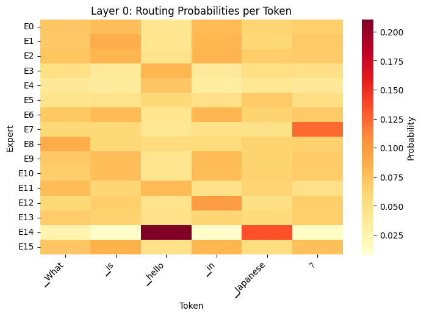
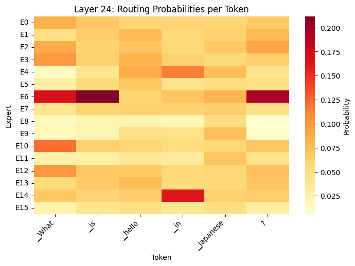
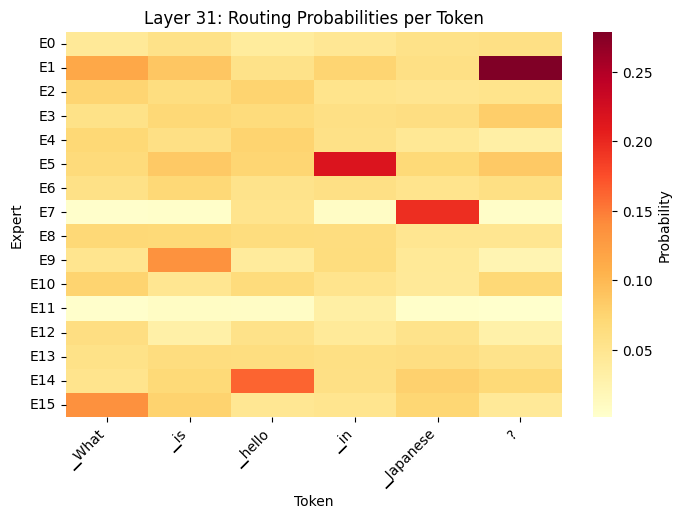

from transformers import AutoModelForCausalLM, AutoTokenizer
import torch
model = AutoModelForCausalLM.from_pretrained(
"microsoft/Phi-tiny-MoE-instruct",
device_map="auto",
dtype=torch.float16,
trust_remote_code=True,
output_router_logits=True # Enable router outputs
)
tokenizer = AutoTokenizer.from_pretrained(
"microsoft/Phi-tiny-MoE-instruct",
trust_remote_code=True
)Module 5: Running Models on Local Hardware
Recap
- Understood the fundamentals and history of diffuser models
- Explored and used models that demonstrate text-to-image, image-to-image, inpainting, outpainting, and ControlNet
- Setup and used Replicate to create a custom pipeline of production-grade models
- Understood the fundamentals and history of Vision Encoders and VLMs
- Implemented/tested a local VLM model for on-device inference
Lesson Objectives
- Understand the use cases, advantages/disadvantages for running models on local hardware - desktop, web, mobile
- Understand hardware requirements and architectures for model inference - e.g., CUDA vs. ONNX vs. MLX vs. WebGPU
- Explore how quantization works and understand techniques and formats for quantizing existing models
- Use llama.cpp to quantize and run an SLM on local hardware/gaming PC
- Integrate a quantized model within Unity/Unreal/WebAssembly
Why Local Models?
Why Local Models?
- Privacy
- Every call you make to OpenAI/Claude/OpenRouter may (or may not) get logged and/or be used for training purposes
- Many organizations don’t want their customer/financial data logged with an AI vendor
- There may also be legal regulations/restrictions controlling this
Why Local Models?
- Offline
- Every call you make to OpenAI/Claude/OpenRouter needs an Internet connection
- That’s not always guaranteed!
- Education is a good example - remote school in India and/or rural districts here in the US
Why Local Models?
- Latency
- Even with a network connection, calls can suffer from increased latency
- Can be a challenge if your application needs frequent, quick responses
- e.g., using a VLM to determine the contents of a video stream for a user with vision impairments
Why Local Models?
- Cost
- While per-API costs are fractions of a cent, these can grow out of control with exponential growth
- More pronounced for long conversation threads (think call center)
- Or agents with verbose tool call JSON requests/responses
What’s Your Hardware?
What’s Your Hardware?
- NVIDIA (CUDA)
- AMD (ROCm)
- Apple Silicon
- Various NPU (Neural Processing Unit) vendors
NVIDIA CUDA
- CUDA (Compute Unified Device Architecture)
- Launched in 2006 to introduce programming on GPUs (GPGPUs or General Purpose GPUs)
- A C-like programming interface
- Perfectly timed for the deep learning revolution of the 2010s
- Additional libraries (e.g., cuBLAS, cuDNN) make CUDA the defacto standard today
How CUDA Works
- Massive parallelism: CUDA exploits thousands of GPU cores simultaneously, making it ideal for matrix operations.
- Memory hierarchy: A tiered memory system with global, shared, and registers.
- Kernel execution: Programs can launch kernels - same function that can operate on different data.
NVIDIA CUDA - Hardware Support
- Consumer: RTX 40- and 50- cards with various VRAM options (8Gb - 24Gb) for local inference and small fine-tuning tasks. RTX 30- series still popular for education.
- Laptop: RTX 40- and 50- series also available on laptops (although less performant than discrete cards)
- Workstation: DGX Spark launch in 2025, with GB10 and 128Gb of unified memory for medium fine-tuning tasks
- Datacenter GPUs: A/H series and GB-series for datacenters. NVLink for multi-GPU interconnectivity.
Sidebar: TOPS
- TOPS (Terra Operations Per Second)
- How many trillion operations a processor can perform per second
- Often qualified with the data type
- 64 INT8 TOPS == 64 trillion 8-bit operations per second
- TFLOPS (Terra Floating-Point Operations Per Second)
- 1 TFLOPS == 1 FP32 (32-bit floating point) TOPS
Sidebar: TOPS
- Rough Throughput Calculations
- You have an NVIDIA 3090 (advertized at 35 TFLOPS)
- Assume a 7B param model with FP32 weights
- Each token generation requires ~2 FLOPs per parameter
- Each token generation ~= 14B FLOPs (7B params × 2)
- Theoretical max = 35T FLOPs/sec ÷ 14B FLOPs/token ≈ 2,500 tokens/sec
- Reality: 10-100 tokens/sec typical due to memory bandwidth bottlenecks
AMD ROCm
- ROCm (Radeon Open Compute)
- Launched in 2016 as an open-source alternative to CUDA
- Embraced open standards (e.g., OpenCL), positioning as avoiding vendor lock-in, although this fragmentation initially hurt adoption
- Has evolved significantly since (e.g., rocBLAS) although ecosystem gaps compared to CUDA persist
AMD ROCm - Hardware Support
- Consumer: RX7000 series offer sustantial VRAM (up to 24Gb) at competitive prices compared to NVIDIA RTX
- Laptop: Some laptop options for AMD-based machines
- Workstation: Strix Halo, competitor to DGX Spark, with RX8060S and 128Gb unified memory
- Software support: Linux only with no Windows support (some via WSL)
Apple Silicon
- Apple Silicon
- Metal, a low-level graphics and compute API, launched in 2014 and later expanded for general GPU compute tasks
- MPS (Metal Performance Shaders) introduced in 2017 and optimized primitives for neural networks. PyTorch added MPS device support in 2022.
- MLX released in 2023, providing NumPy-like API for Apple Silicon hardware
Apple Silicon - Hardware Support
- Available on all M-series hardware
- Unified memory by default, upto 128Gb on laptops and 512Gb for the Mac Studio with M3 Ultra
- Non portable models. (MLX uses safetensors/npz format and MLX-specific code for Metal.)
Sidebar: Unified Memory
- GPUs have historically had separate memory (VRAM)
- Unified memory is a process to share memory between CPU and GPU
- For Apple/MLX, it’s a true SoC (System on a Chip); NVIDIA DGX Spark, two physical components connected via NVLink-C2C
- Higher memory availability, but lower memory bandwidth
- ~275Gb/s for Spark/MLX; ~1TB/s for 5080; ~1.7TB/s for 5090; ~3TBs for H100
NPUs
- NPUs (Neural Processing Units) are specialized AI accelerators, designed for lower power consumption
- Optimized specifically for NN operations (e.g., matmul, convolutions, activations)
- Commonly found in edge devices (smartphones, IoT, embedded systems)
- 15-80 TOPS common for NPUs (~10x less that desktop PCI-based GPUs)
NPU Vendors
- Intel: Acquired Movidius in 2016; released Myriad X in 2017 and a neural compute stick. Superceded by NPUs in Core Ultra processors.
- Qualcomm: Snapdragon 865 range in 2019; now Snapdragon X and 8 ranges. Used in Windows/ARM devices. Popular with Android, although Google recently moved to their own TPUs.
- AMD: XDNA formerly Xilinx; Windows Copilot PC range competing with SnapDragon and Intel Core Ultra.
- Apple: ANE (Apple Neural Engine) to support CoreML workloads on iPhone, iPad devices
Compute and Memory Challenges
Compute and Memory Challenges
- Compute Challenges
- Local GPUs significantly slower than datacenter-class GPUs
- 4060 Ti (~350 TOPS) vs. H100 (~3500+ TOPS)
- One local GPU vs. interconnected datacenter-class GPUs (using NVLink)
- Less TOPS = slower inference (tokens/second)
Compute and Memory Challenges
- Memory Challenges
- Consumer-grade GPUs and NPUs have significanly less memory than datacenter-class GPUs
- 8Gb/16Gb VRAM on 4060 Ti vs. 80/94Gb for H100
- (Also memory bandwidth is typically 10x-20x)
- (Combined memory architecture using NVLink)
- Less memory = only smaller models can run
- Rougly speaking, size of model must be smaller than available VRAM
Overcoming Compute Challenges
Overcoming Compute Challenges
- MoE (Mixture of Experts)
- Original concept dates back to 1991. Jacobs et al. publish “Adaptive Mixture of Local Experts” showing subnetworks and a gating mechanism
- In 2017, Shazeer et al. (Google) publish “Outrageously Large Neural Networks: The Sparsely-Gated Mixture-of-Experts Layer” demonstrating activating only a small subset of experts per input
- 2022: Google releases Switch Transformers (Fedus et al.), simplifying MoE by routing each token to just a single expert
- 2023: Mixtral 8x7B (Mistral AI) brings high-quality open-source MoE to the mainstream, becoming a standard architecture for efficient large-scale models
Popular MoE Models
- Mixtral (Mistral)
- Qwen MoE (Alibaba)
- DeepSeek MoE
- Phi MoE (Microsoft’s SLMs)
- Nemotron (NVIDIA)
Overcoming Compute Challenges
- Why MoE?
- Faster Inference (token/second): Because you are only using a subset of experts for each token.
- Allows you to use larger models, where you would be otherwise compute-bound
- Dense 13B model ~= 13Gb VRAM
- Mixtral 8x7B ~= 47GB VRAM (8×7B experts + shared layers), but faster inference than dense 47B (only ~2 experts active per token)
How do MoE Models Work?
How do MoE Models Work?
PROMPT = "What is hello in Japanese?"
gate_layers = []
for name, module in model.named_modules():
if 'block_sparse_moe.gate' in name:
gate_layers.append((name, module))
print(f"Found {len(gate_layers)} gate layers\n")
router_outputs = []
def router_hook(module, input, output):
router_outputs.append(output.detach().cpu())
# Register hooks
hooks = []
for name, module in gate_layers:
hooks.append(module.register_forward_hook(router_hook))
inputs = tokenizer(PROMPT, return_tensors="pt").to(model.device)
# Run forward pass
router_outputs.clear()
with torch.no_grad():
_ = model(**inputs, use_cache=False)
# Analyze first layer
router_probs = torch.softmax(router_outputs[0], dim=-1)
print("First layer routing:")
print(f" Number of experts: {router_probs.shape[-1]}")
print(f" Shape: {router_probs.shape}")
# Show top-k experts for first 5 tokens
for tok_idx in range(min(5, router_probs.shape[0])):
top_k = torch.topk(router_probs[tok_idx], k=4)
print(f" Token {tok_idx}: top experts {top_k.indices.tolist()} "
f"with probs {[f'{p:.3f}' for p in top_k.values.tolist()]}")How do MoE Models Work?
import matplotlib.pyplot as plt
import seaborn as sns
PROMPT = "What is hello in Japanese?"
def capture_routing(prompt):
inputs = tokenizer(prompt, return_tensors="pt").to(model.device)
tokens = tokenizer.convert_ids_to_tokens(inputs['input_ids'][0])
router_outputs.clear()
with torch.no_grad():
_ = model(**inputs, use_cache=False)
return router_outputs[:32], tokens
def routing_heatmap(router_logits, tokens, layer_idx=0):
# Get routing probabilities
router_probs = torch.softmax(router_logits[layer_idx], dim=-1).numpy()
num_tokens, num_experts = router_probs.shape
fig, axes = plt.subplots(1, 1, figsize=(8, 5))
# Use seaborn to display routing probabilities
sns.heatmap(
router_probs.T,
cmap='YlOrRd',
ax=axes,
cbar_kws={'label': 'Probability'},
xticklabels=tokens[:num_tokens],
yticklabels=[f'E{i}' for i in range(num_experts)]
)
axes.set_title(f'Layer {layer_idx}: Routing Probabilities per Token')
axes.set_xlabel('Token')
axes.set_ylabel('Expert')
plt.setp(axes.get_xticklabels(), rotation=45, ha='right')
outputs, tokens = capture_routing(PROMPT)
# Display heatmap for layer 0
routing_heatmap(outputs, tokens, layer_idx=0)How do MoE Models Work?

How do MoE Models Work?

How do MoE Models Work?

How do MoE Models Work?

How do MoE Models Work?

How do MoE Models Work
- What the Heatmaps Show
- Different tokens activate different experts (token-level routing)
- Routing changes across layers (layer 0 vs. layer 31)
- Early layers: syntax/grammar
- Late layers: semantics/reasoning
- Not all experts used equally (specialization emerges)
- Router makes soft decisions (distributes probability across multiple experts)
How do MoEs Get Trained?
- From scratch
- Train the entire model (experts and router)
- Router networks learn which expert to select
- Experts learn their specializations
- Example: Mixtral 8x7B
- Start from a trained dense model (called upcycling)
- Replicate each layer into multiple experts; add router networks
- Typically faster and more stable vs. starting from scratch
- Example: Qwen1.5-MoE
How do MoEs Get Trained?
- Combine multiple models (FrankenMoE / MoErge)
- Newer, community-driven approach
- Take specialized models (e.g., math, coding, chat) and use their FFN layers as separate experts; add router network
- Train only the router (experts frozen initially)
- Cheaper than training from scratch, but often lower quality
- Example: Beyonder-4x7B
How do MoEs Get Trained?
- Key challenge: Load balancing / Expert collapse
- Healthy MoE:
- Expert 0: 8% of tokens
- Expert 1: 7% of tokens
- Expert 2: 9% of tokens
- (all experts get reasonable usage)
- Collapsed MoE:
- Expert 0: 45% of tokens
- Expert 1: 40% of tokens
- Expert 2-7: <15% combined (essentially dead)
Hands-on
Run the MoE heatmap; investigate other layers
Potentially swap out Phi model with other MoE from HF
Overcoming Compute Challenges
- MoE gives us speed with quality
- But we still can’t fit it on consumer hardware
- Popular MoE models often exceed the amount of available VRAM
- We need a way to reduce the memory footprint of the model…
Overcoming Memory Challenges
Introducing Quantization
- Process of reducing the precision of a model’s weights and activations
- For example, converting 16-bit numbers to 4-bit
- Less precision significantly reduces memory needs
- For accuracy, parameter count matters more than precision
- A 70B parameter model at 4-bit often beats a 13B model at bf16
- The models knowledge remains largely intact
- Often the extra precision doesn’t meaningfully improve outputs
Quantization Formats
- GPTQ (GPT Quantization):
- Introduced in the paper “GPTQ: Accurate Post-Training Quantization for Generative Pre-trained Transformers”
- First widely adopted method (in 2022) for agressive (4-bit) quantization
- CUDA only; distributed via HF Transformers
- GGML (Georgi Gerganov Machine Learning):
- A C/C++ library (“llama.cpp” released in Mar 2023) designed for CPU inference of models
- Optimized for CPUs (using SIMD) with a custom binary format
- Democratized access to LLMs overnight (ability to run Llama 7B on CPU)
Quantization Formats
- GGUF (GPT-Generated Unified Format):
- Replaced GGML in late 2023, adding extensibility
- Better metadata support (model architecture, tokenizer info, quantization details)
- Single file architecture
- Can offload layers to GPU/NPU, if available, increasing performance
- Multiple quantization schemes (Q4_K_M, Q5_K_S, Q6_K, etc.)
Sidebar: Quantization Schemes
- What does Q4_K_M mean?
- Number (Q4, Q5, Q6, etc.) is the average bits per weight
- Letter suffix (K, 0, 1) is the quantization strategy
- Size suffix (S, M, L) for variants within that method
Sidebar: Quantization Schemes
- Q2_K = Agressive quantization, smallest files, noticable loss
- Q4_K_M = Best quality/size trade off; most popular
- Q6_K = Very close to full precision, but much larger files (almost double Q4_K_M)
- Q8_0 = Essentially lossless compared to FP16
Sidebar: Quantization Schemes
- K-Quant strategy
- A mixed quantization strategy; quantize different parts of the model at different bit depths depending on sensitivity
- e.g., critical weights (e.g., attention layers) get higher precision; less sensitive weights get more aggressive quantization
- 0 and 1 strategy
- Uniform quantization across all layers (1 strategy adds a zero point)
- Less optimal than using K strategy (and rarely used)
Running llama.cpp
- https://github.com/ggml-org/llama.cpp
- C/C++ library; download (brew, nix, winget) or compile from source
- Initially just a CLI, but now ships with Web UI and OpenAI API compatible server
- Can reference a locally downloaded .gguf file or pull one from HF
Demo
llama-cli -m my_model.gguf
llama-cli -hf ggml-org/gemma-3-1b-it-GGUF
llama-server -hf ggml-org/gemma-3-1b-it-GGUF
llama.cpp Wrappers
- Ollama (https://ollama.com)
- Simple CLI wrapper around llama.cpp
- Uses a container-like Modelfile to customize system prompts, parameters, etc.
- Curated collection of models on ollama.com/library
- LM Studio
- Desktop GUI wrapper around llama.cpp
- Supports browsing/downloading of models from HF - i.e., “iTunes for LLMs”
- In-built chat interface and API server
Demo
Browsing, downloading, and running a quantized model on LM Studio
Hands-on
Install LM Studio, pick, and download your own model
(Alterrnatively use llama.cpp or Ollama from the CLI)
Quantization in Other Frameworks
MLX (Apple’s ML Framework)
- ML framework created by Apple (released Dec 2023)
- Designed specifically for Apple Silicon (M-series processors)
- Python API similar to NumPy/PyTorch, but optimized for Metal (Apple’s GPU API)
- Can run on non-Apple hardware - CPU and CUDA PyPi packages
MLX (Apple’s ML Framework)
- Supports various levels of quantization (4bit and 8bit)
- .npz or .safetensor format (with MLX metadata)
- Better performance on Mac (compared to GGUF)
- mlx-community on HF hosts MLX-quantized versions of popular models (separate repos)
ONNX (Open Neural Network eXchange)
- Model interchange format, created by Microsoft and Facebook in 2017 to enable model portability
- Models can be converted: PyTorch -> ONNX; TensorFlow -> ONNX; etc.
- Common export format, used in many CNNs and RNNs
- Popular for models running on mobile devices and in-browser (e.g., Transformers.js)
ONNX (Open Neural Network eXchange)
- Supports dynamic quantization (typically int8)
- .onnx file format (uses protobuf format) includes graph structure, weights, and metadata
- Broad portability, but at the expense of performance
- ONNX models tend to live in separate folders on HF
How to Quantize a Model
How to Quantize a Model
- Popular models have already been quantized
- Many available on HF, contributed by Unsloth AI
- If the model isn’t already quantized (or you’ve fine tuned your own), it’s easy to do
How to Quantize a Model
Cloning into 'llama.cpp'... remote: Enumerating objects: 77965, done. remote: Counting objects: 100% (228/228), done. remote: Compressing objects: 100% (156/156), done. remote: Total 77965 (delta 141), reused 76 (delta 72), pack-reused 77737 (from 4) Receiving objects: 100% (77965/77965), 286.82 MiB | 15.73 MiB/s, done. Resolving deltas: 100% (56335/56335), done. -- The C compiler identification is GNU 11.4.0 -- The CXX compiler identification is GNU 11.4.0 -- Detecting C compiler ABI info -- Detecting C compiler ABI info - done -- Check for working C compiler: /usr/bin/cc - skipped -- Detecting C compile features -- Detecting C compile features - done -- Detecting CXX compiler ABI info -- Detecting CXX compiler ABI info - done -- Check for working CXX compiler: /usr/bin/c++ - skipped -- Detecting CXX compile features -- Detecting CXX compile features - done CMAKE_BUILD_TYPE=Release -- Found Git: /usr/bin/git (found version "2.34.1") -- The ASM compiler identification is GNU -- Found assembler: /usr/bin/cc -- Performing Test CMAKE_HAVE_LIBC_PTHREAD -- Performing Test CMAKE_HAVE_LIBC_PTHREAD - Success -- Found Threads: TRUE -- Warning: ccache not found - consider installing it for faster compilation or disable this warning with GGML_CCACHE=OFF -- CMAKE_SYSTEM_PROCESSOR: x86_64 -- GGML_SYSTEM_ARCH: x86 -- Including CPU backend -- Found OpenMP_C: -fopenmp (found version "4.5") -- Found OpenMP_CXX: -fopenmp (found version "4.5") -- Found OpenMP: TRUE (found version "4.5") -- x86 detected -- Adding CPU backend variant ggml-cpu: -march=native -- ggml version: 0.9.5 -- ggml commit: 0dfcd3b60 -- Found OpenSSL: /usr/lib/x86_64-linux-gnu/libcrypto.so (found version "3.0.2") -- Performing Test OPENSSL_VERSION_SUPPORTED -- Performing Test OPENSSL_VERSION_SUPPORTED - Success -- OpenSSL found: 3.0.2 -- Generating embedded license file for target: common -- Configuring done (1.6s) -- Generating done (0.3s) -- Build files have been written to: /content/tmp/llama.cpp/build [ 0%] Building CXX object vendor/cpp-httplib/CMakeFiles/cpp-httplib.dir/httplib.cpp.o [ 0%] Linking CXX static library libcpp-httplib.a [ 0%] Built target cpp-httplib [ 0%] Building C object ggml/src/CMakeFiles/ggml-base.dir/ggml.c.o [ 2%] Building CXX object ggml/src/CMakeFiles/ggml-base.dir/ggml.cpp.o [ 2%] Building C object ggml/src/CMakeFiles/ggml-base.dir/ggml-alloc.c.o [ 2%] Building CXX object ggml/src/CMakeFiles/ggml-base.dir/ggml-backend.cpp.o [ 2%] Building CXX object ggml/src/CMakeFiles/ggml-base.dir/ggml-opt.cpp.o [ 2%] Building CXX object ggml/src/CMakeFiles/ggml-base.dir/ggml-threading.cpp.o [ 4%] Building C object ggml/src/CMakeFiles/ggml-base.dir/ggml-quants.c.o [ 4%] Building CXX object ggml/src/CMakeFiles/ggml-base.dir/gguf.cpp.o [ 4%] Linking CXX shared library ../../bin/libggml-base.so [ 4%] Built target ggml-base [ 4%] Building C object ggml/src/CMakeFiles/ggml-cpu.dir/ggml-cpu/ggml-cpu.c.o [ 6%] Building CXX object ggml/src/CMakeFiles/ggml-cpu.dir/ggml-cpu/ggml-cpu.cpp.o [ 6%] Building CXX object ggml/src/CMakeFiles/ggml-cpu.dir/ggml-cpu/repack.cpp.o [ 6%] Building CXX object ggml/src/CMakeFiles/ggml-cpu.dir/ggml-cpu/hbm.cpp.o [ 6%] Building C object ggml/src/CMakeFiles/ggml-cpu.dir/ggml-cpu/quants.c.o [ 8%] Building CXX object ggml/src/CMakeFiles/ggml-cpu.dir/ggml-cpu/traits.cpp.o [ 8%] Building CXX object ggml/src/CMakeFiles/ggml-cpu.dir/ggml-cpu/amx/amx.cpp.o [ 8%] Building CXX object ggml/src/CMakeFiles/ggml-cpu.dir/ggml-cpu/amx/mmq.cpp.o [ 8%] Building CXX object ggml/src/CMakeFiles/ggml-cpu.dir/ggml-cpu/binary-ops.cpp.o [ 11%] Building CXX object ggml/src/CMakeFiles/ggml-cpu.dir/ggml-cpu/unary-ops.cpp.o [ 11%] Building CXX object ggml/src/CMakeFiles/ggml-cpu.dir/ggml-cpu/vec.cpp.o [ 11%] Building CXX object ggml/src/CMakeFiles/ggml-cpu.dir/ggml-cpu/ops.cpp.o [ 11%] Building CXX object ggml/src/CMakeFiles/ggml-cpu.dir/ggml-cpu/llamafile/sgemm.cpp.o [ 13%] Building C object ggml/src/CMakeFiles/ggml-cpu.dir/ggml-cpu/arch/x86/quants.c.o [ 13%] Building CXX object ggml/src/CMakeFiles/ggml-cpu.dir/ggml-cpu/arch/x86/repack.cpp.o [ 13%] Linking CXX shared library ../../bin/libggml-cpu.so [ 13%] Built target ggml-cpu [ 15%] Building CXX object ggml/src/CMakeFiles/ggml.dir/ggml-backend-dl.cpp.o [ 15%] Building CXX object ggml/src/CMakeFiles/ggml.dir/ggml-backend-reg.cpp.o [ 15%] Linking CXX shared library ../../bin/libggml.so [ 15%] Built target ggml [ 15%] Building CXX object src/CMakeFiles/llama.dir/llama.cpp.o [ 15%] Building CXX object src/CMakeFiles/llama.dir/llama-adapter.cpp.o [ 17%] Building CXX object src/CMakeFiles/llama.dir/llama-arch.cpp.o [ 17%] Building CXX object src/CMakeFiles/llama.dir/llama-batch.cpp.o [ 17%] Building CXX object src/CMakeFiles/llama.dir/llama-chat.cpp.o [ 17%] Building CXX object src/CMakeFiles/llama.dir/llama-context.cpp.o [ 20%] Building CXX object src/CMakeFiles/llama.dir/llama-cparams.cpp.o [ 20%] Building CXX object src/CMakeFiles/llama.dir/llama-grammar.cpp.o [ 20%] Building CXX object src/CMakeFiles/llama.dir/llama-graph.cpp.o [ 20%] Building CXX object src/CMakeFiles/llama.dir/llama-hparams.cpp.o [ 22%] Building CXX object src/CMakeFiles/llama.dir/llama-impl.cpp.o [ 22%] Building CXX object src/CMakeFiles/llama.dir/llama-io.cpp.o [ 22%] Building CXX object src/CMakeFiles/llama.dir/llama-kv-cache.cpp.o [ 22%] Building CXX object src/CMakeFiles/llama.dir/llama-kv-cache-iswa.cpp.o [ 24%] Building CXX object src/CMakeFiles/llama.dir/llama-memory.cpp.o [ 24%] Building CXX object src/CMakeFiles/llama.dir/llama-memory-hybrid.cpp.o [ 24%] Building CXX object src/CMakeFiles/llama.dir/llama-memory-hybrid-iswa.cpp.o [ 24%] Building CXX object src/CMakeFiles/llama.dir/llama-memory-recurrent.cpp.o [ 26%] Building CXX object src/CMakeFiles/llama.dir/llama-mmap.cpp.o [ 26%] Building CXX object src/CMakeFiles/llama.dir/llama-model-loader.cpp.o [ 26%] Building CXX object src/CMakeFiles/llama.dir/llama-model-saver.cpp.o [ 26%] Building CXX object src/CMakeFiles/llama.dir/llama-model.cpp.o [ 26%] Building CXX object src/CMakeFiles/llama.dir/llama-quant.cpp.o [ 28%] Building CXX object src/CMakeFiles/llama.dir/llama-sampling.cpp.o [ 28%] Building CXX object src/CMakeFiles/llama.dir/llama-vocab.cpp.o [ 28%] Building CXX object src/CMakeFiles/llama.dir/unicode-data.cpp.o [ 28%] Building CXX object src/CMakeFiles/llama.dir/unicode.cpp.o [ 31%] Building CXX object src/CMakeFiles/llama.dir/models/afmoe.cpp.o [ 31%] Building CXX object src/CMakeFiles/llama.dir/models/apertus.cpp.o [ 31%] Building CXX object src/CMakeFiles/llama.dir/models/arcee.cpp.o [ 31%] Building CXX object src/CMakeFiles/llama.dir/models/arctic.cpp.o [ 33%] Building CXX object src/CMakeFiles/llama.dir/models/arwkv7.cpp.o [ 33%] Building CXX object src/CMakeFiles/llama.dir/models/baichuan.cpp.o [ 33%] Building CXX object src/CMakeFiles/llama.dir/models/bailingmoe.cpp.o [ 33%] Building CXX object src/CMakeFiles/llama.dir/models/bailingmoe2.cpp.o [ 35%] Building CXX object src/CMakeFiles/llama.dir/models/bert.cpp.o [ 35%] Building CXX object src/CMakeFiles/llama.dir/models/bitnet.cpp.o [ 35%] Building CXX object src/CMakeFiles/llama.dir/models/bloom.cpp.o [ 35%] Building CXX object src/CMakeFiles/llama.dir/models/chameleon.cpp.o [ 35%] Building CXX object src/CMakeFiles/llama.dir/models/chatglm.cpp.o [ 37%] Building CXX object src/CMakeFiles/llama.dir/models/codeshell.cpp.o [ 37%] Building CXX object src/CMakeFiles/llama.dir/models/cogvlm.cpp.o [ 37%] Building CXX object src/CMakeFiles/llama.dir/models/cohere2-iswa.cpp.o [ 37%] Building CXX object src/CMakeFiles/llama.dir/models/command-r.cpp.o [ 40%] Building CXX object src/CMakeFiles/llama.dir/models/dbrx.cpp.o [ 40%] Building CXX object src/CMakeFiles/llama.dir/models/deci.cpp.o [ 40%] Building CXX object src/CMakeFiles/llama.dir/models/deepseek.cpp.o [ 40%] Building CXX object src/CMakeFiles/llama.dir/models/deepseek2.cpp.o [ 42%] Building CXX object src/CMakeFiles/llama.dir/models/dots1.cpp.o [ 42%] Building CXX object src/CMakeFiles/llama.dir/models/dream.cpp.o [ 42%] Building CXX object src/CMakeFiles/llama.dir/models/ernie4-5-moe.cpp.o [ 42%] Building CXX object src/CMakeFiles/llama.dir/models/ernie4-5.cpp.o [ 44%] Building CXX object src/CMakeFiles/llama.dir/models/exaone.cpp.o [ 44%] Building CXX object src/CMakeFiles/llama.dir/models/exaone4.cpp.o [ 44%] Building CXX object src/CMakeFiles/llama.dir/models/exaone-moe.cpp.o [ 44%] Building CXX object src/CMakeFiles/llama.dir/models/falcon-h1.cpp.o [ 46%] Building CXX object src/CMakeFiles/llama.dir/models/falcon.cpp.o [ 46%] Building CXX object src/CMakeFiles/llama.dir/models/gemma-embedding.cpp.o [ 46%] Building CXX object src/CMakeFiles/llama.dir/models/gemma.cpp.o [ 46%] Building CXX object src/CMakeFiles/llama.dir/models/gemma2-iswa.cpp.o [ 46%] Building CXX object src/CMakeFiles/llama.dir/models/gemma3.cpp.o [ 48%] Building CXX object src/CMakeFiles/llama.dir/models/gemma3n-iswa.cpp.o [ 48%] Building CXX object src/CMakeFiles/llama.dir/models/glm4-moe.cpp.o [ 48%] Building CXX object src/CMakeFiles/llama.dir/models/glm4.cpp.o [ 48%] Building CXX object src/CMakeFiles/llama.dir/models/gpt2.cpp.o [ 51%] Building CXX object src/CMakeFiles/llama.dir/models/gptneox.cpp.o [ 51%] Building CXX object src/CMakeFiles/llama.dir/models/granite-hybrid.cpp.o [ 51%] Building CXX object src/CMakeFiles/llama.dir/models/granite.cpp.o [ 51%] Building CXX object src/CMakeFiles/llama.dir/models/grok.cpp.o [ 53%] Building CXX object src/CMakeFiles/llama.dir/models/grovemoe.cpp.o [ 53%] Building CXX object src/CMakeFiles/llama.dir/models/hunyuan-dense.cpp.o [ 53%] Building CXX object src/CMakeFiles/llama.dir/models/hunyuan-moe.cpp.o [ 53%] Building CXX object src/CMakeFiles/llama.dir/models/internlm2.cpp.o [ 55%] Building CXX object src/CMakeFiles/llama.dir/models/jais.cpp.o [ 55%] Building CXX object src/CMakeFiles/llama.dir/models/jamba.cpp.o [ 55%] Building CXX object src/CMakeFiles/llama.dir/models/lfm2.cpp.o [ 55%] Building CXX object src/CMakeFiles/llama.dir/models/llada-moe.cpp.o [ 57%] Building CXX object src/CMakeFiles/llama.dir/models/llada.cpp.o [ 57%] Building CXX object src/CMakeFiles/llama.dir/models/llama-iswa.cpp.o [ 57%] Building CXX object src/CMakeFiles/llama.dir/models/llama.cpp.o [ 57%] Building CXX object src/CMakeFiles/llama.dir/models/maincoder.cpp.o [ 57%] Building CXX object src/CMakeFiles/llama.dir/models/mamba.cpp.o [ 60%] Building CXX object src/CMakeFiles/llama.dir/models/mimo2-iswa.cpp.o [ 60%] Building CXX object src/CMakeFiles/llama.dir/models/minicpm3.cpp.o [ 60%] Building CXX object src/CMakeFiles/llama.dir/models/minimax-m2.cpp.o [ 60%] Building CXX object src/CMakeFiles/llama.dir/models/modern-bert.cpp.o [ 62%] Building CXX object src/CMakeFiles/llama.dir/models/mpt.cpp.o [ 62%] Building CXX object src/CMakeFiles/llama.dir/models/nemotron-h.cpp.o [ 62%] Building CXX object src/CMakeFiles/llama.dir/models/nemotron.cpp.o [ 62%] Building CXX object src/CMakeFiles/llama.dir/models/neo-bert.cpp.o [ 64%] Building CXX object src/CMakeFiles/llama.dir/models/olmo.cpp.o [ 64%] Building CXX object src/CMakeFiles/llama.dir/models/olmo2.cpp.o [ 64%] Building CXX object src/CMakeFiles/llama.dir/models/olmoe.cpp.o [ 64%] Building CXX object src/CMakeFiles/llama.dir/models/openai-moe-iswa.cpp.o [ 66%] Building CXX object src/CMakeFiles/llama.dir/models/openelm.cpp.o [ 66%] Building CXX object src/CMakeFiles/llama.dir/models/orion.cpp.o [ 66%] Building CXX object src/CMakeFiles/llama.dir/models/pangu-embedded.cpp.o [ 66%] Building CXX object src/CMakeFiles/llama.dir/models/phi2.cpp.o [ 68%] Building CXX object src/CMakeFiles/llama.dir/models/phi3.cpp.o [ 68%] Building CXX object src/CMakeFiles/llama.dir/models/plamo.cpp.o [ 68%] Building CXX object src/CMakeFiles/llama.dir/models/plamo2.cpp.o [ 68%] Building CXX object src/CMakeFiles/llama.dir/models/plamo3.cpp.o [ 68%] Building CXX object src/CMakeFiles/llama.dir/models/plm.cpp.o [ 71%] Building CXX object src/CMakeFiles/llama.dir/models/qwen.cpp.o [ 71%] Building CXX object src/CMakeFiles/llama.dir/models/qwen2.cpp.o [ 71%] Building CXX object src/CMakeFiles/llama.dir/models/qwen2moe.cpp.o [ 71%] Building CXX object src/CMakeFiles/llama.dir/models/qwen2vl.cpp.o [ 73%] Building CXX object src/CMakeFiles/llama.dir/models/qwen3.cpp.o [ 73%] Building CXX object src/CMakeFiles/llama.dir/models/qwen3vl.cpp.o [ 73%] Building CXX object src/CMakeFiles/llama.dir/models/qwen3vl-moe.cpp.o [ 73%] Building CXX object src/CMakeFiles/llama.dir/models/qwen3moe.cpp.o [ 75%] Building CXX object src/CMakeFiles/llama.dir/models/qwen3next.cpp.o [ 75%] Building CXX object src/CMakeFiles/llama.dir/models/refact.cpp.o [ 75%] Building CXX object src/CMakeFiles/llama.dir/models/rnd1.cpp.o [ 75%] Building CXX object src/CMakeFiles/llama.dir/models/rwkv6-base.cpp.o [ 77%] Building CXX object src/CMakeFiles/llama.dir/models/rwkv6.cpp.o [ 77%] Building CXX object src/CMakeFiles/llama.dir/models/rwkv6qwen2.cpp.o [ 77%] Building CXX object src/CMakeFiles/llama.dir/models/rwkv7-base.cpp.o [ 77%] Building CXX object src/CMakeFiles/llama.dir/models/rwkv7.cpp.o [ 77%] Building CXX object src/CMakeFiles/llama.dir/models/seed-oss.cpp.o [ 80%] Building CXX object src/CMakeFiles/llama.dir/models/smallthinker.cpp.o [ 80%] Building CXX object src/CMakeFiles/llama.dir/models/smollm3.cpp.o [ 80%] Building CXX object src/CMakeFiles/llama.dir/models/stablelm.cpp.o [ 80%] Building CXX object src/CMakeFiles/llama.dir/models/starcoder.cpp.o [ 82%] Building CXX object src/CMakeFiles/llama.dir/models/starcoder2.cpp.o [ 82%] Building CXX object src/CMakeFiles/llama.dir/models/t5-dec.cpp.o [ 82%] Building CXX object src/CMakeFiles/llama.dir/models/t5-enc.cpp.o [ 82%] Building CXX object src/CMakeFiles/llama.dir/models/wavtokenizer-dec.cpp.o [ 84%] Building CXX object src/CMakeFiles/llama.dir/models/xverse.cpp.o [ 84%] Building CXX object src/CMakeFiles/llama.dir/models/mistral3.cpp.o [ 84%] Building CXX object src/CMakeFiles/llama.dir/models/graph-context-mamba.cpp.o [ 84%] Linking CXX shared library ../bin/libllama.so [ 84%] Built target llama [ 84%] Building CXX object common/CMakeFiles/build_info.dir/build-info.cpp.o [ 84%] Built target build_info [ 84%] Building CXX object common/CMakeFiles/common.dir/arg.cpp.o [ 84%] Building CXX object common/CMakeFiles/common.dir/chat-parser.cpp.o [ 84%] Building CXX object common/CMakeFiles/common.dir/chat-parser-xml-toolcall.cpp.o [ 86%] Building CXX object common/CMakeFiles/common.dir/chat-peg-parser.cpp.o [ 86%] Building CXX object common/CMakeFiles/common.dir/chat.cpp.o [ 86%] Building CXX object common/CMakeFiles/common.dir/common.cpp.o [ 86%] Building CXX object common/CMakeFiles/common.dir/console.cpp.o [ 88%] Building CXX object common/CMakeFiles/common.dir/debug.cpp.o [ 88%] Building CXX object common/CMakeFiles/common.dir/download.cpp.o [ 88%] Building CXX object common/CMakeFiles/common.dir/json-partial.cpp.o [ 88%] Building CXX object common/CMakeFiles/common.dir/json-schema-to-grammar.cpp.o [ 91%] Building CXX object common/CMakeFiles/common.dir/llguidance.cpp.o [ 91%] Building CXX object common/CMakeFiles/common.dir/log.cpp.o [ 91%] Building CXX object common/CMakeFiles/common.dir/ngram-cache.cpp.o [ 91%] Building CXX object common/CMakeFiles/common.dir/ngram-map.cpp.o [ 93%] Building CXX object common/CMakeFiles/common.dir/ngram-mod.cpp.o [ 93%] Building CXX object common/CMakeFiles/common.dir/peg-parser.cpp.o [ 93%] Building CXX object common/CMakeFiles/common.dir/preset.cpp.o [ 93%] Building CXX object common/CMakeFiles/common.dir/regex-partial.cpp.o [ 93%] Building CXX object common/CMakeFiles/common.dir/sampling.cpp.o [ 95%] Building CXX object common/CMakeFiles/common.dir/speculative.cpp.o [ 95%] Building CXX object common/CMakeFiles/common.dir/unicode.cpp.o [ 95%] Building CXX object common/CMakeFiles/common.dir/jinja/lexer.cpp.o [ 95%] Building CXX object common/CMakeFiles/common.dir/jinja/parser.cpp.o [ 97%] Building CXX object common/CMakeFiles/common.dir/jinja/runtime.cpp.o [ 97%] Building CXX object common/CMakeFiles/common.dir/jinja/value.cpp.o [ 97%] Building CXX object common/CMakeFiles/common.dir/jinja/string.cpp.o [ 97%] Building CXX object common/CMakeFiles/common.dir/jinja/caps.cpp.o [100%] Building CXX object common/CMakeFiles/common.dir/__/license.cpp.o [100%] Linking CXX static library libcommon.a [100%] Built target common [100%] Building CXX object tools/quantize/CMakeFiles/llama-quantize.dir/quantize.cpp.o [100%] Linking CXX executable ../../bin/llama-quantize [100%] Built target llama-quantize
How to Quantize a Model
INFO:hf-to-gguf:Loading model: Qwen3-0.6B
INFO:hf-to-gguf:Model architecture: Qwen3ForCausalLM
INFO:hf-to-gguf:gguf: indexing model part 'model.safetensors'
INFO:gguf.gguf_writer:gguf: This GGUF file is for Little Endian only
INFO:hf-to-gguf:Exporting model...
INFO:hf-to-gguf:output.weight, torch.bfloat16 --> F16, shape = {1024, 151936}
INFO:hf-to-gguf:token_embd.weight, torch.bfloat16 --> F16, shape = {1024, 151936}
INFO:hf-to-gguf:blk.0.attn_norm.weight, torch.bfloat16 --> F32, shape = {1024}
INFO:hf-to-gguf:blk.0.ffn_down.weight, torch.bfloat16 --> F16, shape = {3072, 1024}
INFO:hf-to-gguf:blk.0.ffn_gate.weight, torch.bfloat16 --> F16, shape = {1024, 3072}
INFO:hf-to-gguf:blk.0.ffn_up.weight, torch.bfloat16 --> F16, shape = {1024, 3072}
INFO:hf-to-gguf:blk.0.ffn_norm.weight, torch.bfloat16 --> F32, shape = {1024}
INFO:hf-to-gguf:blk.0.attn_k_norm.weight, torch.bfloat16 --> F32, shape = {128}
INFO:hf-to-gguf:blk.0.attn_k.weight, torch.bfloat16 --> F16, shape = {1024, 1024}
INFO:hf-to-gguf:blk.0.attn_output.weight, torch.bfloat16 --> F16, shape = {2048, 1024}
INFO:hf-to-gguf:blk.0.attn_q_norm.weight, torch.bfloat16 --> F32, shape = {128}
INFO:hf-to-gguf:blk.0.attn_q.weight, torch.bfloat16 --> F16, shape = {1024, 2048}
INFO:hf-to-gguf:blk.0.attn_v.weight, torch.bfloat16 --> F16, shape = {1024, 1024}
INFO:hf-to-gguf:blk.1.attn_norm.weight, torch.bfloat16 --> F32, shape = {1024}
INFO:hf-to-gguf:blk.1.ffn_down.weight, torch.bfloat16 --> F16, shape = {3072, 1024}
INFO:hf-to-gguf:blk.1.ffn_gate.weight, torch.bfloat16 --> F16, shape = {1024, 3072}
INFO:hf-to-gguf:blk.1.ffn_up.weight, torch.bfloat16 --> F16, shape = {1024, 3072}
INFO:hf-to-gguf:blk.1.ffn_norm.weight, torch.bfloat16 --> F32, shape = {1024}
INFO:hf-to-gguf:blk.1.attn_k_norm.weight, torch.bfloat16 --> F32, shape = {128}
INFO:hf-to-gguf:blk.1.attn_k.weight, torch.bfloat16 --> F16, shape = {1024, 1024}
INFO:hf-to-gguf:blk.1.attn_output.weight, torch.bfloat16 --> F16, shape = {2048, 1024}
INFO:hf-to-gguf:blk.1.attn_q_norm.weight, torch.bfloat16 --> F32, shape = {128}
INFO:hf-to-gguf:blk.1.attn_q.weight, torch.bfloat16 --> F16, shape = {1024, 2048}
INFO:hf-to-gguf:blk.1.attn_v.weight, torch.bfloat16 --> F16, shape = {1024, 1024}
INFO:hf-to-gguf:blk.10.attn_norm.weight, torch.bfloat16 --> F32, shape = {1024}
INFO:hf-to-gguf:blk.10.ffn_down.weight, torch.bfloat16 --> F16, shape = {3072, 1024}
INFO:hf-to-gguf:blk.10.ffn_gate.weight, torch.bfloat16 --> F16, shape = {1024, 3072}
INFO:hf-to-gguf:blk.10.ffn_up.weight, torch.bfloat16 --> F16, shape = {1024, 3072}
INFO:hf-to-gguf:blk.10.ffn_norm.weight, torch.bfloat16 --> F32, shape = {1024}
INFO:hf-to-gguf:blk.10.attn_k_norm.weight, torch.bfloat16 --> F32, shape = {128}
INFO:hf-to-gguf:blk.10.attn_k.weight, torch.bfloat16 --> F16, shape = {1024, 1024}
INFO:hf-to-gguf:blk.10.attn_output.weight, torch.bfloat16 --> F16, shape = {2048, 1024}
INFO:hf-to-gguf:blk.10.attn_q_norm.weight, torch.bfloat16 --> F32, shape = {128}
INFO:hf-to-gguf:blk.10.attn_q.weight, torch.bfloat16 --> F16, shape = {1024, 2048}
INFO:hf-to-gguf:blk.10.attn_v.weight, torch.bfloat16 --> F16, shape = {1024, 1024}
INFO:hf-to-gguf:blk.11.attn_norm.weight, torch.bfloat16 --> F32, shape = {1024}
INFO:hf-to-gguf:blk.11.ffn_down.weight, torch.bfloat16 --> F16, shape = {3072, 1024}
INFO:hf-to-gguf:blk.11.ffn_gate.weight, torch.bfloat16 --> F16, shape = {1024, 3072}
INFO:hf-to-gguf:blk.11.ffn_up.weight, torch.bfloat16 --> F16, shape = {1024, 3072}
INFO:hf-to-gguf:blk.11.ffn_norm.weight, torch.bfloat16 --> F32, shape = {1024}
INFO:hf-to-gguf:blk.11.attn_k_norm.weight, torch.bfloat16 --> F32, shape = {128}
INFO:hf-to-gguf:blk.11.attn_k.weight, torch.bfloat16 --> F16, shape = {1024, 1024}
INFO:hf-to-gguf:blk.11.attn_output.weight, torch.bfloat16 --> F16, shape = {2048, 1024}
INFO:hf-to-gguf:blk.11.attn_q_norm.weight, torch.bfloat16 --> F32, shape = {128}
INFO:hf-to-gguf:blk.11.attn_q.weight, torch.bfloat16 --> F16, shape = {1024, 2048}
INFO:hf-to-gguf:blk.11.attn_v.weight, torch.bfloat16 --> F16, shape = {1024, 1024}
INFO:hf-to-gguf:blk.12.attn_norm.weight, torch.bfloat16 --> F32, shape = {1024}
INFO:hf-to-gguf:blk.12.ffn_down.weight, torch.bfloat16 --> F16, shape = {3072, 1024}
INFO:hf-to-gguf:blk.12.ffn_gate.weight, torch.bfloat16 --> F16, shape = {1024, 3072}
INFO:hf-to-gguf:blk.12.ffn_up.weight, torch.bfloat16 --> F16, shape = {1024, 3072}
INFO:hf-to-gguf:blk.12.ffn_norm.weight, torch.bfloat16 --> F32, shape = {1024}
INFO:hf-to-gguf:blk.12.attn_k_norm.weight, torch.bfloat16 --> F32, shape = {128}
INFO:hf-to-gguf:blk.12.attn_k.weight, torch.bfloat16 --> F16, shape = {1024, 1024}
INFO:hf-to-gguf:blk.12.attn_output.weight, torch.bfloat16 --> F16, shape = {2048, 1024}
INFO:hf-to-gguf:blk.12.attn_q_norm.weight, torch.bfloat16 --> F32, shape = {128}
INFO:hf-to-gguf:blk.12.attn_q.weight, torch.bfloat16 --> F16, shape = {1024, 2048}
INFO:hf-to-gguf:blk.12.attn_v.weight, torch.bfloat16 --> F16, shape = {1024, 1024}
INFO:hf-to-gguf:blk.13.attn_norm.weight, torch.bfloat16 --> F32, shape = {1024}
INFO:hf-to-gguf:blk.13.ffn_down.weight, torch.bfloat16 --> F16, shape = {3072, 1024}
INFO:hf-to-gguf:blk.13.ffn_gate.weight, torch.bfloat16 --> F16, shape = {1024, 3072}
INFO:hf-to-gguf:blk.13.ffn_up.weight, torch.bfloat16 --> F16, shape = {1024, 3072}
INFO:hf-to-gguf:blk.13.ffn_norm.weight, torch.bfloat16 --> F32, shape = {1024}
INFO:hf-to-gguf:blk.13.attn_k_norm.weight, torch.bfloat16 --> F32, shape = {128}
INFO:hf-to-gguf:blk.13.attn_k.weight, torch.bfloat16 --> F16, shape = {1024, 1024}
INFO:hf-to-gguf:blk.13.attn_output.weight, torch.bfloat16 --> F16, shape = {2048, 1024}
INFO:hf-to-gguf:blk.13.attn_q_norm.weight, torch.bfloat16 --> F32, shape = {128}
INFO:hf-to-gguf:blk.13.attn_q.weight, torch.bfloat16 --> F16, shape = {1024, 2048}
INFO:hf-to-gguf:blk.13.attn_v.weight, torch.bfloat16 --> F16, shape = {1024, 1024}
INFO:hf-to-gguf:blk.14.attn_norm.weight, torch.bfloat16 --> F32, shape = {1024}
INFO:hf-to-gguf:blk.14.ffn_down.weight, torch.bfloat16 --> F16, shape = {3072, 1024}
INFO:hf-to-gguf:blk.14.ffn_gate.weight, torch.bfloat16 --> F16, shape = {1024, 3072}
INFO:hf-to-gguf:blk.14.ffn_up.weight, torch.bfloat16 --> F16, shape = {1024, 3072}
INFO:hf-to-gguf:blk.14.ffn_norm.weight, torch.bfloat16 --> F32, shape = {1024}
INFO:hf-to-gguf:blk.14.attn_k_norm.weight, torch.bfloat16 --> F32, shape = {128}
INFO:hf-to-gguf:blk.14.attn_k.weight, torch.bfloat16 --> F16, shape = {1024, 1024}
INFO:hf-to-gguf:blk.14.attn_output.weight, torch.bfloat16 --> F16, shape = {2048, 1024}
INFO:hf-to-gguf:blk.14.attn_q_norm.weight, torch.bfloat16 --> F32, shape = {128}
INFO:hf-to-gguf:blk.14.attn_q.weight, torch.bfloat16 --> F16, shape = {1024, 2048}
INFO:hf-to-gguf:blk.14.attn_v.weight, torch.bfloat16 --> F16, shape = {1024, 1024}
INFO:hf-to-gguf:blk.15.attn_norm.weight, torch.bfloat16 --> F32, shape = {1024}
INFO:hf-to-gguf:blk.15.ffn_down.weight, torch.bfloat16 --> F16, shape = {3072, 1024}
INFO:hf-to-gguf:blk.15.ffn_gate.weight, torch.bfloat16 --> F16, shape = {1024, 3072}
INFO:hf-to-gguf:blk.15.ffn_up.weight, torch.bfloat16 --> F16, shape = {1024, 3072}
INFO:hf-to-gguf:blk.15.ffn_norm.weight, torch.bfloat16 --> F32, shape = {1024}
INFO:hf-to-gguf:blk.15.attn_k_norm.weight, torch.bfloat16 --> F32, shape = {128}
INFO:hf-to-gguf:blk.15.attn_k.weight, torch.bfloat16 --> F16, shape = {1024, 1024}
INFO:hf-to-gguf:blk.15.attn_output.weight, torch.bfloat16 --> F16, shape = {2048, 1024}
INFO:hf-to-gguf:blk.15.attn_q_norm.weight, torch.bfloat16 --> F32, shape = {128}
INFO:hf-to-gguf:blk.15.attn_q.weight, torch.bfloat16 --> F16, shape = {1024, 2048}
INFO:hf-to-gguf:blk.15.attn_v.weight, torch.bfloat16 --> F16, shape = {1024, 1024}
INFO:hf-to-gguf:blk.16.attn_norm.weight, torch.bfloat16 --> F32, shape = {1024}
INFO:hf-to-gguf:blk.16.ffn_down.weight, torch.bfloat16 --> F16, shape = {3072, 1024}
INFO:hf-to-gguf:blk.16.ffn_gate.weight, torch.bfloat16 --> F16, shape = {1024, 3072}
INFO:hf-to-gguf:blk.16.ffn_up.weight, torch.bfloat16 --> F16, shape = {1024, 3072}
INFO:hf-to-gguf:blk.16.ffn_norm.weight, torch.bfloat16 --> F32, shape = {1024}
INFO:hf-to-gguf:blk.16.attn_k_norm.weight, torch.bfloat16 --> F32, shape = {128}
INFO:hf-to-gguf:blk.16.attn_k.weight, torch.bfloat16 --> F16, shape = {1024, 1024}
INFO:hf-to-gguf:blk.16.attn_output.weight, torch.bfloat16 --> F16, shape = {2048, 1024}
INFO:hf-to-gguf:blk.16.attn_q_norm.weight, torch.bfloat16 --> F32, shape = {128}
INFO:hf-to-gguf:blk.16.attn_q.weight, torch.bfloat16 --> F16, shape = {1024, 2048}
INFO:hf-to-gguf:blk.16.attn_v.weight, torch.bfloat16 --> F16, shape = {1024, 1024}
INFO:hf-to-gguf:blk.17.attn_norm.weight, torch.bfloat16 --> F32, shape = {1024}
INFO:hf-to-gguf:blk.17.ffn_down.weight, torch.bfloat16 --> F16, shape = {3072, 1024}
INFO:hf-to-gguf:blk.17.ffn_gate.weight, torch.bfloat16 --> F16, shape = {1024, 3072}
INFO:hf-to-gguf:blk.17.ffn_up.weight, torch.bfloat16 --> F16, shape = {1024, 3072}
INFO:hf-to-gguf:blk.17.ffn_norm.weight, torch.bfloat16 --> F32, shape = {1024}
INFO:hf-to-gguf:blk.17.attn_k_norm.weight, torch.bfloat16 --> F32, shape = {128}
INFO:hf-to-gguf:blk.17.attn_k.weight, torch.bfloat16 --> F16, shape = {1024, 1024}
INFO:hf-to-gguf:blk.17.attn_output.weight, torch.bfloat16 --> F16, shape = {2048, 1024}
INFO:hf-to-gguf:blk.17.attn_q_norm.weight, torch.bfloat16 --> F32, shape = {128}
INFO:hf-to-gguf:blk.17.attn_q.weight, torch.bfloat16 --> F16, shape = {1024, 2048}
INFO:hf-to-gguf:blk.17.attn_v.weight, torch.bfloat16 --> F16, shape = {1024, 1024}
INFO:hf-to-gguf:blk.18.attn_norm.weight, torch.bfloat16 --> F32, shape = {1024}
INFO:hf-to-gguf:blk.18.ffn_down.weight, torch.bfloat16 --> F16, shape = {3072, 1024}
INFO:hf-to-gguf:blk.18.ffn_gate.weight, torch.bfloat16 --> F16, shape = {1024, 3072}
INFO:hf-to-gguf:blk.18.ffn_up.weight, torch.bfloat16 --> F16, shape = {1024, 3072}
INFO:hf-to-gguf:blk.18.ffn_norm.weight, torch.bfloat16 --> F32, shape = {1024}
INFO:hf-to-gguf:blk.18.attn_k_norm.weight, torch.bfloat16 --> F32, shape = {128}
INFO:hf-to-gguf:blk.18.attn_k.weight, torch.bfloat16 --> F16, shape = {1024, 1024}
INFO:hf-to-gguf:blk.18.attn_output.weight, torch.bfloat16 --> F16, shape = {2048, 1024}
INFO:hf-to-gguf:blk.18.attn_q_norm.weight, torch.bfloat16 --> F32, shape = {128}
INFO:hf-to-gguf:blk.18.attn_q.weight, torch.bfloat16 --> F16, shape = {1024, 2048}
INFO:hf-to-gguf:blk.18.attn_v.weight, torch.bfloat16 --> F16, shape = {1024, 1024}
INFO:hf-to-gguf:blk.19.attn_norm.weight, torch.bfloat16 --> F32, shape = {1024}
INFO:hf-to-gguf:blk.19.ffn_down.weight, torch.bfloat16 --> F16, shape = {3072, 1024}
INFO:hf-to-gguf:blk.19.ffn_gate.weight, torch.bfloat16 --> F16, shape = {1024, 3072}
INFO:hf-to-gguf:blk.19.ffn_up.weight, torch.bfloat16 --> F16, shape = {1024, 3072}
INFO:hf-to-gguf:blk.19.ffn_norm.weight, torch.bfloat16 --> F32, shape = {1024}
INFO:hf-to-gguf:blk.19.attn_k_norm.weight, torch.bfloat16 --> F32, shape = {128}
INFO:hf-to-gguf:blk.19.attn_k.weight, torch.bfloat16 --> F16, shape = {1024, 1024}
INFO:hf-to-gguf:blk.19.attn_output.weight, torch.bfloat16 --> F16, shape = {2048, 1024}
INFO:hf-to-gguf:blk.19.attn_q_norm.weight, torch.bfloat16 --> F32, shape = {128}
INFO:hf-to-gguf:blk.19.attn_q.weight, torch.bfloat16 --> F16, shape = {1024, 2048}
INFO:hf-to-gguf:blk.19.attn_v.weight, torch.bfloat16 --> F16, shape = {1024, 1024}
INFO:hf-to-gguf:blk.2.attn_norm.weight, torch.bfloat16 --> F32, shape = {1024}
INFO:hf-to-gguf:blk.2.ffn_down.weight, torch.bfloat16 --> F16, shape = {3072, 1024}
INFO:hf-to-gguf:blk.2.ffn_gate.weight, torch.bfloat16 --> F16, shape = {1024, 3072}
INFO:hf-to-gguf:blk.2.ffn_up.weight, torch.bfloat16 --> F16, shape = {1024, 3072}
INFO:hf-to-gguf:blk.2.ffn_norm.weight, torch.bfloat16 --> F32, shape = {1024}
INFO:hf-to-gguf:blk.2.attn_k_norm.weight, torch.bfloat16 --> F32, shape = {128}
INFO:hf-to-gguf:blk.2.attn_k.weight, torch.bfloat16 --> F16, shape = {1024, 1024}
INFO:hf-to-gguf:blk.2.attn_output.weight, torch.bfloat16 --> F16, shape = {2048, 1024}
INFO:hf-to-gguf:blk.2.attn_q_norm.weight, torch.bfloat16 --> F32, shape = {128}
INFO:hf-to-gguf:blk.2.attn_q.weight, torch.bfloat16 --> F16, shape = {1024, 2048}
INFO:hf-to-gguf:blk.2.attn_v.weight, torch.bfloat16 --> F16, shape = {1024, 1024}
INFO:hf-to-gguf:blk.20.attn_norm.weight, torch.bfloat16 --> F32, shape = {1024}
INFO:hf-to-gguf:blk.20.ffn_down.weight, torch.bfloat16 --> F16, shape = {3072, 1024}
INFO:hf-to-gguf:blk.20.ffn_gate.weight, torch.bfloat16 --> F16, shape = {1024, 3072}
INFO:hf-to-gguf:blk.20.ffn_up.weight, torch.bfloat16 --> F16, shape = {1024, 3072}
INFO:hf-to-gguf:blk.20.ffn_norm.weight, torch.bfloat16 --> F32, shape = {1024}
INFO:hf-to-gguf:blk.20.attn_k_norm.weight, torch.bfloat16 --> F32, shape = {128}
INFO:hf-to-gguf:blk.20.attn_k.weight, torch.bfloat16 --> F16, shape = {1024, 1024}
INFO:hf-to-gguf:blk.20.attn_output.weight, torch.bfloat16 --> F16, shape = {2048, 1024}
INFO:hf-to-gguf:blk.20.attn_q_norm.weight, torch.bfloat16 --> F32, shape = {128}
INFO:hf-to-gguf:blk.20.attn_q.weight, torch.bfloat16 --> F16, shape = {1024, 2048}
INFO:hf-to-gguf:blk.20.attn_v.weight, torch.bfloat16 --> F16, shape = {1024, 1024}
INFO:hf-to-gguf:blk.21.attn_norm.weight, torch.bfloat16 --> F32, shape = {1024}
INFO:hf-to-gguf:blk.21.ffn_down.weight, torch.bfloat16 --> F16, shape = {3072, 1024}
INFO:hf-to-gguf:blk.21.ffn_gate.weight, torch.bfloat16 --> F16, shape = {1024, 3072}
INFO:hf-to-gguf:blk.21.ffn_up.weight, torch.bfloat16 --> F16, shape = {1024, 3072}
INFO:hf-to-gguf:blk.21.ffn_norm.weight, torch.bfloat16 --> F32, shape = {1024}
INFO:hf-to-gguf:blk.21.attn_k_norm.weight, torch.bfloat16 --> F32, shape = {128}
INFO:hf-to-gguf:blk.21.attn_k.weight, torch.bfloat16 --> F16, shape = {1024, 1024}
INFO:hf-to-gguf:blk.21.attn_output.weight, torch.bfloat16 --> F16, shape = {2048, 1024}
INFO:hf-to-gguf:blk.21.attn_q_norm.weight, torch.bfloat16 --> F32, shape = {128}
INFO:hf-to-gguf:blk.21.attn_q.weight, torch.bfloat16 --> F16, shape = {1024, 2048}
INFO:hf-to-gguf:blk.21.attn_v.weight, torch.bfloat16 --> F16, shape = {1024, 1024}
INFO:hf-to-gguf:blk.22.attn_norm.weight, torch.bfloat16 --> F32, shape = {1024}
INFO:hf-to-gguf:blk.22.ffn_down.weight, torch.bfloat16 --> F16, shape = {3072, 1024}
INFO:hf-to-gguf:blk.22.ffn_gate.weight, torch.bfloat16 --> F16, shape = {1024, 3072}
INFO:hf-to-gguf:blk.22.ffn_up.weight, torch.bfloat16 --> F16, shape = {1024, 3072}
INFO:hf-to-gguf:blk.22.ffn_norm.weight, torch.bfloat16 --> F32, shape = {1024}
INFO:hf-to-gguf:blk.22.attn_k_norm.weight, torch.bfloat16 --> F32, shape = {128}
INFO:hf-to-gguf:blk.22.attn_k.weight, torch.bfloat16 --> F16, shape = {1024, 1024}
INFO:hf-to-gguf:blk.22.attn_output.weight, torch.bfloat16 --> F16, shape = {2048, 1024}
INFO:hf-to-gguf:blk.22.attn_q_norm.weight, torch.bfloat16 --> F32, shape = {128}
INFO:hf-to-gguf:blk.22.attn_q.weight, torch.bfloat16 --> F16, shape = {1024, 2048}
INFO:hf-to-gguf:blk.22.attn_v.weight, torch.bfloat16 --> F16, shape = {1024, 1024}
INFO:hf-to-gguf:blk.23.attn_norm.weight, torch.bfloat16 --> F32, shape = {1024}
INFO:hf-to-gguf:blk.23.ffn_down.weight, torch.bfloat16 --> F16, shape = {3072, 1024}
INFO:hf-to-gguf:blk.23.ffn_gate.weight, torch.bfloat16 --> F16, shape = {1024, 3072}
INFO:hf-to-gguf:blk.23.ffn_up.weight, torch.bfloat16 --> F16, shape = {1024, 3072}
INFO:hf-to-gguf:blk.23.ffn_norm.weight, torch.bfloat16 --> F32, shape = {1024}
INFO:hf-to-gguf:blk.23.attn_k_norm.weight, torch.bfloat16 --> F32, shape = {128}
INFO:hf-to-gguf:blk.23.attn_k.weight, torch.bfloat16 --> F16, shape = {1024, 1024}
INFO:hf-to-gguf:blk.23.attn_output.weight, torch.bfloat16 --> F16, shape = {2048, 1024}
INFO:hf-to-gguf:blk.23.attn_q_norm.weight, torch.bfloat16 --> F32, shape = {128}
INFO:hf-to-gguf:blk.23.attn_q.weight, torch.bfloat16 --> F16, shape = {1024, 2048}
INFO:hf-to-gguf:blk.23.attn_v.weight, torch.bfloat16 --> F16, shape = {1024, 1024}
INFO:hf-to-gguf:blk.24.attn_norm.weight, torch.bfloat16 --> F32, shape = {1024}
INFO:hf-to-gguf:blk.24.ffn_down.weight, torch.bfloat16 --> F16, shape = {3072, 1024}
INFO:hf-to-gguf:blk.24.ffn_gate.weight, torch.bfloat16 --> F16, shape = {1024, 3072}
INFO:hf-to-gguf:blk.24.ffn_up.weight, torch.bfloat16 --> F16, shape = {1024, 3072}
INFO:hf-to-gguf:blk.24.ffn_norm.weight, torch.bfloat16 --> F32, shape = {1024}
INFO:hf-to-gguf:blk.24.attn_k_norm.weight, torch.bfloat16 --> F32, shape = {128}
INFO:hf-to-gguf:blk.24.attn_k.weight, torch.bfloat16 --> F16, shape = {1024, 1024}
INFO:hf-to-gguf:blk.24.attn_output.weight, torch.bfloat16 --> F16, shape = {2048, 1024}
INFO:hf-to-gguf:blk.24.attn_q_norm.weight, torch.bfloat16 --> F32, shape = {128}
INFO:hf-to-gguf:blk.24.attn_q.weight, torch.bfloat16 --> F16, shape = {1024, 2048}
INFO:hf-to-gguf:blk.24.attn_v.weight, torch.bfloat16 --> F16, shape = {1024, 1024}
INFO:hf-to-gguf:blk.25.attn_norm.weight, torch.bfloat16 --> F32, shape = {1024}
INFO:hf-to-gguf:blk.25.ffn_down.weight, torch.bfloat16 --> F16, shape = {3072, 1024}
INFO:hf-to-gguf:blk.25.ffn_gate.weight, torch.bfloat16 --> F16, shape = {1024, 3072}
INFO:hf-to-gguf:blk.25.ffn_up.weight, torch.bfloat16 --> F16, shape = {1024, 3072}
INFO:hf-to-gguf:blk.25.ffn_norm.weight, torch.bfloat16 --> F32, shape = {1024}
INFO:hf-to-gguf:blk.25.attn_k_norm.weight, torch.bfloat16 --> F32, shape = {128}
INFO:hf-to-gguf:blk.25.attn_k.weight, torch.bfloat16 --> F16, shape = {1024, 1024}
INFO:hf-to-gguf:blk.25.attn_output.weight, torch.bfloat16 --> F16, shape = {2048, 1024}
INFO:hf-to-gguf:blk.25.attn_q_norm.weight, torch.bfloat16 --> F32, shape = {128}
INFO:hf-to-gguf:blk.25.attn_q.weight, torch.bfloat16 --> F16, shape = {1024, 2048}
INFO:hf-to-gguf:blk.25.attn_v.weight, torch.bfloat16 --> F16, shape = {1024, 1024}
INFO:hf-to-gguf:blk.26.attn_norm.weight, torch.bfloat16 --> F32, shape = {1024}
INFO:hf-to-gguf:blk.26.ffn_down.weight, torch.bfloat16 --> F16, shape = {3072, 1024}
INFO:hf-to-gguf:blk.26.ffn_gate.weight, torch.bfloat16 --> F16, shape = {1024, 3072}
INFO:hf-to-gguf:blk.26.ffn_up.weight, torch.bfloat16 --> F16, shape = {1024, 3072}
INFO:hf-to-gguf:blk.26.ffn_norm.weight, torch.bfloat16 --> F32, shape = {1024}
INFO:hf-to-gguf:blk.26.attn_k_norm.weight, torch.bfloat16 --> F32, shape = {128}
INFO:hf-to-gguf:blk.26.attn_k.weight, torch.bfloat16 --> F16, shape = {1024, 1024}
INFO:hf-to-gguf:blk.26.attn_output.weight, torch.bfloat16 --> F16, shape = {2048, 1024}
INFO:hf-to-gguf:blk.26.attn_q_norm.weight, torch.bfloat16 --> F32, shape = {128}
INFO:hf-to-gguf:blk.26.attn_q.weight, torch.bfloat16 --> F16, shape = {1024, 2048}
INFO:hf-to-gguf:blk.26.attn_v.weight, torch.bfloat16 --> F16, shape = {1024, 1024}
INFO:hf-to-gguf:blk.27.attn_norm.weight, torch.bfloat16 --> F32, shape = {1024}
INFO:hf-to-gguf:blk.27.ffn_down.weight, torch.bfloat16 --> F16, shape = {3072, 1024}
INFO:hf-to-gguf:blk.27.ffn_gate.weight, torch.bfloat16 --> F16, shape = {1024, 3072}
INFO:hf-to-gguf:blk.27.ffn_up.weight, torch.bfloat16 --> F16, shape = {1024, 3072}
INFO:hf-to-gguf:blk.27.ffn_norm.weight, torch.bfloat16 --> F32, shape = {1024}
INFO:hf-to-gguf:blk.27.attn_k_norm.weight, torch.bfloat16 --> F32, shape = {128}
INFO:hf-to-gguf:blk.27.attn_k.weight, torch.bfloat16 --> F16, shape = {1024, 1024}
INFO:hf-to-gguf:blk.27.attn_output.weight, torch.bfloat16 --> F16, shape = {2048, 1024}
INFO:hf-to-gguf:blk.27.attn_q_norm.weight, torch.bfloat16 --> F32, shape = {128}
INFO:hf-to-gguf:blk.27.attn_q.weight, torch.bfloat16 --> F16, shape = {1024, 2048}
INFO:hf-to-gguf:blk.27.attn_v.weight, torch.bfloat16 --> F16, shape = {1024, 1024}
INFO:hf-to-gguf:blk.3.attn_norm.weight, torch.bfloat16 --> F32, shape = {1024}
INFO:hf-to-gguf:blk.3.ffn_down.weight, torch.bfloat16 --> F16, shape = {3072, 1024}
INFO:hf-to-gguf:blk.3.ffn_gate.weight, torch.bfloat16 --> F16, shape = {1024, 3072}
INFO:hf-to-gguf:blk.3.ffn_up.weight, torch.bfloat16 --> F16, shape = {1024, 3072}
INFO:hf-to-gguf:blk.3.ffn_norm.weight, torch.bfloat16 --> F32, shape = {1024}
INFO:hf-to-gguf:blk.3.attn_k_norm.weight, torch.bfloat16 --> F32, shape = {128}
INFO:hf-to-gguf:blk.3.attn_k.weight, torch.bfloat16 --> F16, shape = {1024, 1024}
INFO:hf-to-gguf:blk.3.attn_output.weight, torch.bfloat16 --> F16, shape = {2048, 1024}
INFO:hf-to-gguf:blk.3.attn_q_norm.weight, torch.bfloat16 --> F32, shape = {128}
INFO:hf-to-gguf:blk.3.attn_q.weight, torch.bfloat16 --> F16, shape = {1024, 2048}
INFO:hf-to-gguf:blk.3.attn_v.weight, torch.bfloat16 --> F16, shape = {1024, 1024}
INFO:hf-to-gguf:blk.4.attn_norm.weight, torch.bfloat16 --> F32, shape = {1024}
INFO:hf-to-gguf:blk.4.ffn_down.weight, torch.bfloat16 --> F16, shape = {3072, 1024}
INFO:hf-to-gguf:blk.4.ffn_gate.weight, torch.bfloat16 --> F16, shape = {1024, 3072}
INFO:hf-to-gguf:blk.4.ffn_up.weight, torch.bfloat16 --> F16, shape = {1024, 3072}
INFO:hf-to-gguf:blk.4.ffn_norm.weight, torch.bfloat16 --> F32, shape = {1024}
INFO:hf-to-gguf:blk.4.attn_k_norm.weight, torch.bfloat16 --> F32, shape = {128}
INFO:hf-to-gguf:blk.4.attn_k.weight, torch.bfloat16 --> F16, shape = {1024, 1024}
INFO:hf-to-gguf:blk.4.attn_output.weight, torch.bfloat16 --> F16, shape = {2048, 1024}
INFO:hf-to-gguf:blk.4.attn_q_norm.weight, torch.bfloat16 --> F32, shape = {128}
INFO:hf-to-gguf:blk.4.attn_q.weight, torch.bfloat16 --> F16, shape = {1024, 2048}
INFO:hf-to-gguf:blk.4.attn_v.weight, torch.bfloat16 --> F16, shape = {1024, 1024}
INFO:hf-to-gguf:blk.5.attn_norm.weight, torch.bfloat16 --> F32, shape = {1024}
INFO:hf-to-gguf:blk.5.ffn_down.weight, torch.bfloat16 --> F16, shape = {3072, 1024}
INFO:hf-to-gguf:blk.5.ffn_gate.weight, torch.bfloat16 --> F16, shape = {1024, 3072}
INFO:hf-to-gguf:blk.5.ffn_up.weight, torch.bfloat16 --> F16, shape = {1024, 3072}
INFO:hf-to-gguf:blk.5.ffn_norm.weight, torch.bfloat16 --> F32, shape = {1024}
INFO:hf-to-gguf:blk.5.attn_k_norm.weight, torch.bfloat16 --> F32, shape = {128}
INFO:hf-to-gguf:blk.5.attn_k.weight, torch.bfloat16 --> F16, shape = {1024, 1024}
INFO:hf-to-gguf:blk.5.attn_output.weight, torch.bfloat16 --> F16, shape = {2048, 1024}
INFO:hf-to-gguf:blk.5.attn_q_norm.weight, torch.bfloat16 --> F32, shape = {128}
INFO:hf-to-gguf:blk.5.attn_q.weight, torch.bfloat16 --> F16, shape = {1024, 2048}
INFO:hf-to-gguf:blk.5.attn_v.weight, torch.bfloat16 --> F16, shape = {1024, 1024}
INFO:hf-to-gguf:blk.6.attn_norm.weight, torch.bfloat16 --> F32, shape = {1024}
INFO:hf-to-gguf:blk.6.ffn_down.weight, torch.bfloat16 --> F16, shape = {3072, 1024}
INFO:hf-to-gguf:blk.6.ffn_gate.weight, torch.bfloat16 --> F16, shape = {1024, 3072}
INFO:hf-to-gguf:blk.6.ffn_up.weight, torch.bfloat16 --> F16, shape = {1024, 3072}
INFO:hf-to-gguf:blk.6.ffn_norm.weight, torch.bfloat16 --> F32, shape = {1024}
INFO:hf-to-gguf:blk.6.attn_k_norm.weight, torch.bfloat16 --> F32, shape = {128}
INFO:hf-to-gguf:blk.6.attn_k.weight, torch.bfloat16 --> F16, shape = {1024, 1024}
INFO:hf-to-gguf:blk.6.attn_output.weight, torch.bfloat16 --> F16, shape = {2048, 1024}
INFO:hf-to-gguf:blk.6.attn_q_norm.weight, torch.bfloat16 --> F32, shape = {128}
INFO:hf-to-gguf:blk.6.attn_q.weight, torch.bfloat16 --> F16, shape = {1024, 2048}
INFO:hf-to-gguf:blk.6.attn_v.weight, torch.bfloat16 --> F16, shape = {1024, 1024}
INFO:hf-to-gguf:blk.7.attn_norm.weight, torch.bfloat16 --> F32, shape = {1024}
INFO:hf-to-gguf:blk.7.ffn_down.weight, torch.bfloat16 --> F16, shape = {3072, 1024}
INFO:hf-to-gguf:blk.7.ffn_gate.weight, torch.bfloat16 --> F16, shape = {1024, 3072}
INFO:hf-to-gguf:blk.7.ffn_up.weight, torch.bfloat16 --> F16, shape = {1024, 3072}
INFO:hf-to-gguf:blk.7.ffn_norm.weight, torch.bfloat16 --> F32, shape = {1024}
INFO:hf-to-gguf:blk.7.attn_k_norm.weight, torch.bfloat16 --> F32, shape = {128}
INFO:hf-to-gguf:blk.7.attn_k.weight, torch.bfloat16 --> F16, shape = {1024, 1024}
INFO:hf-to-gguf:blk.7.attn_output.weight, torch.bfloat16 --> F16, shape = {2048, 1024}
INFO:hf-to-gguf:blk.7.attn_q_norm.weight, torch.bfloat16 --> F32, shape = {128}
INFO:hf-to-gguf:blk.7.attn_q.weight, torch.bfloat16 --> F16, shape = {1024, 2048}
INFO:hf-to-gguf:blk.7.attn_v.weight, torch.bfloat16 --> F16, shape = {1024, 1024}
INFO:hf-to-gguf:blk.8.attn_norm.weight, torch.bfloat16 --> F32, shape = {1024}
INFO:hf-to-gguf:blk.8.ffn_down.weight, torch.bfloat16 --> F16, shape = {3072, 1024}
INFO:hf-to-gguf:blk.8.ffn_gate.weight, torch.bfloat16 --> F16, shape = {1024, 3072}
INFO:hf-to-gguf:blk.8.ffn_up.weight, torch.bfloat16 --> F16, shape = {1024, 3072}
INFO:hf-to-gguf:blk.8.ffn_norm.weight, torch.bfloat16 --> F32, shape = {1024}
INFO:hf-to-gguf:blk.8.attn_k_norm.weight, torch.bfloat16 --> F32, shape = {128}
INFO:hf-to-gguf:blk.8.attn_k.weight, torch.bfloat16 --> F16, shape = {1024, 1024}
INFO:hf-to-gguf:blk.8.attn_output.weight, torch.bfloat16 --> F16, shape = {2048, 1024}
INFO:hf-to-gguf:blk.8.attn_q_norm.weight, torch.bfloat16 --> F32, shape = {128}
INFO:hf-to-gguf:blk.8.attn_q.weight, torch.bfloat16 --> F16, shape = {1024, 2048}
INFO:hf-to-gguf:blk.8.attn_v.weight, torch.bfloat16 --> F16, shape = {1024, 1024}
INFO:hf-to-gguf:blk.9.attn_norm.weight, torch.bfloat16 --> F32, shape = {1024}
INFO:hf-to-gguf:blk.9.ffn_down.weight, torch.bfloat16 --> F16, shape = {3072, 1024}
INFO:hf-to-gguf:blk.9.ffn_gate.weight, torch.bfloat16 --> F16, shape = {1024, 3072}
INFO:hf-to-gguf:blk.9.ffn_up.weight, torch.bfloat16 --> F16, shape = {1024, 3072}
INFO:hf-to-gguf:blk.9.ffn_norm.weight, torch.bfloat16 --> F32, shape = {1024}
INFO:hf-to-gguf:blk.9.attn_k_norm.weight, torch.bfloat16 --> F32, shape = {128}
INFO:hf-to-gguf:blk.9.attn_k.weight, torch.bfloat16 --> F16, shape = {1024, 1024}
INFO:hf-to-gguf:blk.9.attn_output.weight, torch.bfloat16 --> F16, shape = {2048, 1024}
INFO:hf-to-gguf:blk.9.attn_q_norm.weight, torch.bfloat16 --> F32, shape = {128}
INFO:hf-to-gguf:blk.9.attn_q.weight, torch.bfloat16 --> F16, shape = {1024, 2048}
INFO:hf-to-gguf:blk.9.attn_v.weight, torch.bfloat16 --> F16, shape = {1024, 1024}
INFO:hf-to-gguf:output_norm.weight, torch.bfloat16 --> F32, shape = {1024}
INFO:hf-to-gguf:Set meta model
INFO:hf-to-gguf:Set model parameters
INFO:hf-to-gguf:gguf: context length = 40960
INFO:hf-to-gguf:gguf: embedding length = 1024
INFO:hf-to-gguf:gguf: feed forward length = 3072
INFO:hf-to-gguf:gguf: head count = 16
INFO:hf-to-gguf:gguf: key-value head count = 8
WARNING:hf-to-gguf:Unknown RoPE type: default
INFO:hf-to-gguf:gguf: rope scaling type = NONE
INFO:hf-to-gguf:gguf: rope theta = 1000000
INFO:hf-to-gguf:gguf: rms norm epsilon = 1e-06
INFO:hf-to-gguf:gguf: file type = 1
INFO:hf-to-gguf:Set model quantization version
INFO:hf-to-gguf:Set model tokenizer
INFO:numexpr.utils:NumExpr defaulting to 12 threads.
INFO:gguf.vocab:Adding 151387 merge(s).
INFO:gguf.vocab:Setting special token type eos to 151645
INFO:gguf.vocab:Setting special token type pad to 151643
INFO:gguf.vocab:Setting special token type bos to 151643
INFO:gguf.vocab:Setting add_bos_token to False
INFO:gguf.vocab:Setting chat_template to {%- if tools %}
{{- '<|im_start|>system\n' }}
{%- if messages[0].role == 'system' %}
{{- messages[0].content + '\n\n' }}
{%- endif %}
{{- "# Tools\n\nYou may call one or more functions to assist with the user query.\n\nYou are provided with function signatures within <tools></tools> XML tags:\n<tools>" }}
{%- for tool in tools %}
{{- "\n" }}
{{- tool | tojson }}
{%- endfor %}
{{- "\n</tools>\n\nFor each function call, return a json object with function name and arguments within <tool_call></tool_call> XML tags:\n<tool_call>\n{\"name\": <function-name>, \"arguments\": <args-json-object>}\n</tool_call><|im_end|>\n" }}
{%- else %}
{%- if messages[0].role == 'system' %}
{{- '<|im_start|>system\n' + messages[0].content + '<|im_end|>\n' }}
{%- endif %}
{%- endif %}
{%- set ns = namespace(multi_step_tool=true, last_query_index=messages|length - 1) %}
{%- for message in messages[::-1] %}
{%- set index = (messages|length - 1) - loop.index0 %}
{%- if ns.multi_step_tool and message.role == "user" and message.content is string and not(message.content.startswith('<tool_response>') and message.content.endswith('</tool_response>')) %}
{%- set ns.multi_step_tool = false %}
{%- set ns.last_query_index = index %}
{%- endif %}
{%- endfor %}
{%- for message in messages %}
{%- if message.content is string %}
{%- set content = message.content %}
{%- else %}
{%- set content = '' %}
{%- endif %}
{%- if (message.role == "user") or (message.role == "system" and not loop.first) %}
{{- '<|im_start|>' + message.role + '\n' + content + '<|im_end|>' + '\n' }}
{%- elif message.role == "assistant" %}
{%- set reasoning_content = '' %}
{%- if message.reasoning_content is string %}
{%- set reasoning_content = message.reasoning_content %}
{%- else %}
{%- if '</think>' in content %}
{%- set reasoning_content = content.split('</think>')[0].rstrip('\n').split('<think>')[-1].lstrip('\n') %}
{%- set content = content.split('</think>')[-1].lstrip('\n') %}
{%- endif %}
{%- endif %}
{%- if loop.index0 > ns.last_query_index %}
{%- if loop.last or (not loop.last and reasoning_content) %}
{{- '<|im_start|>' + message.role + '\n<think>\n' + reasoning_content.strip('\n') + '\n</think>\n\n' + content.lstrip('\n') }}
{%- else %}
{{- '<|im_start|>' + message.role + '\n' + content }}
{%- endif %}
{%- else %}
{{- '<|im_start|>' + message.role + '\n' + content }}
{%- endif %}
{%- if message.tool_calls %}
{%- for tool_call in message.tool_calls %}
{%- if (loop.first and content) or (not loop.first) %}
{{- '\n' }}
{%- endif %}
{%- if tool_call.function %}
{%- set tool_call = tool_call.function %}
{%- endif %}
{{- '<tool_call>\n{"name": "' }}
{{- tool_call.name }}
{{- '", "arguments": ' }}
{%- if tool_call.arguments is string %}
{{- tool_call.arguments }}
{%- else %}
{{- tool_call.arguments | tojson }}
{%- endif %}
{{- '}\n</tool_call>' }}
{%- endfor %}
{%- endif %}
{{- '<|im_end|>\n' }}
{%- elif message.role == "tool" %}
{%- if loop.first or (messages[loop.index0 - 1].role != "tool") %}
{{- '<|im_start|>user' }}
{%- endif %}
{{- '\n<tool_response>\n' }}
{{- content }}
{{- '\n</tool_response>' }}
{%- if loop.last or (messages[loop.index0 + 1].role != "tool") %}
{{- '<|im_end|>\n' }}
{%- endif %}
{%- endif %}
{%- endfor %}
{%- if add_generation_prompt %}
{{- '<|im_start|>assistant\n' }}
{%- if enable_thinking is defined and enable_thinking is false %}
{{- '<think>\n\n</think>\n\n' }}
{%- endif %}
{%- endif %}
INFO:gguf.gguf_writer:Writing the following files:
INFO:gguf.gguf_writer:/content/ggufs/Qwen3-0.6B-F16.gguf: n_tensors = 311, total_size = 1.5G
Writing: 100% 1.50G/1.50G [00:05<00:00, 287Mbyte/s]
INFO:hf-to-gguf:Model successfully exported to /content/ggufs/Qwen3-0.6B-F16.gguf
main: build = 7916 (0dfcd3b60)
main: built with GNU 11.4.0 for Linux x86_64
main: quantizing '/content/ggufs/Qwen3-0.6B-F16.gguf' to '/content/ggufs/Qwen3-0.6B-Q4_K_M.gguf' as Q4_K_M
llama_model_loader: loaded meta data with 37 key-value pairs and 311 tensors from /content/ggufs/Qwen3-0.6B-F16.gguf (version GGUF V3 (latest))
llama_model_loader: Dumping metadata keys/values. Note: KV overrides do not apply in this output.
llama_model_loader: - kv 0: general.architecture str = qwen3
llama_model_loader: - kv 1: general.type str = model
llama_model_loader: - kv 2: general.sampling.top_k i32 = 20
llama_model_loader: - kv 3: general.sampling.top_p f32 = 0.950000
llama_model_loader: - kv 4: general.sampling.temp f32 = 0.600000
llama_model_loader: - kv 5: general.name str = Qwen3 0.6B
llama_model_loader: - kv 6: general.basename str = Qwen3
llama_model_loader: - kv 7: general.size_label str = 0.6B
llama_model_loader: - kv 8: general.license str = apache-2.0
llama_model_loader: - kv 9: general.license.link str = https://huggingface.co/Qwen/Qwen3-0.6...
llama_model_loader: - kv 10: general.base_model.count u32 = 1
llama_model_loader: - kv 11: general.base_model.0.name str = Qwen3 0.6B Base
llama_model_loader: - kv 12: general.base_model.0.organization str = Qwen
llama_model_loader: - kv 13: general.base_model.0.repo_url str = https://huggingface.co/Qwen/Qwen3-0.6...
llama_model_loader: - kv 14: general.tags arr[str,1] = ["text-generation"]
llama_model_loader: - kv 15: qwen3.block_count u32 = 28
llama_model_loader: - kv 16: qwen3.context_length u32 = 40960
llama_model_loader: - kv 17: qwen3.embedding_length u32 = 1024
llama_model_loader: - kv 18: qwen3.feed_forward_length u32 = 3072
llama_model_loader: - kv 19: qwen3.attention.head_count u32 = 16
llama_model_loader: - kv 20: qwen3.attention.head_count_kv u32 = 8
llama_model_loader: - kv 21: qwen3.rope.freq_base f32 = 1000000.000000
llama_model_loader: - kv 22: qwen3.attention.layer_norm_rms_epsilon f32 = 0.000001
llama_model_loader: - kv 23: qwen3.attention.key_length u32 = 128
llama_model_loader: - kv 24: qwen3.attention.value_length u32 = 128
llama_model_loader: - kv 25: general.file_type u32 = 1
llama_model_loader: - kv 26: general.quantization_version u32 = 2
llama_model_loader: - kv 27: tokenizer.ggml.model str = gpt2
llama_model_loader: - kv 28: tokenizer.ggml.pre str = qwen2
llama_model_loader: - kv 29: tokenizer.ggml.tokens arr[str,151936] = ["!", "\"", "#", "$", "%", "&", "'", ...
llama_model_loader: - kv 30: tokenizer.ggml.token_type arr[i32,151936] = [1, 1, 1, 1, 1, 1, 1, 1, 1, 1, 1, 1, ...
llama_model_loader: - kv 31: tokenizer.ggml.merges arr[str,151387] = ["Ġ Ġ", "ĠĠ ĠĠ", "i n", "Ġ t",...
llama_model_loader: - kv 32: tokenizer.ggml.eos_token_id u32 = 151645
llama_model_loader: - kv 33: tokenizer.ggml.padding_token_id u32 = 151643
llama_model_loader: - kv 34: tokenizer.ggml.bos_token_id u32 = 151643
llama_model_loader: - kv 35: tokenizer.ggml.add_bos_token bool = false
llama_model_loader: - kv 36: tokenizer.chat_template str = {%- if tools %}\n {{- '<|im_start|>...
llama_model_loader: - type f32: 113 tensors
llama_model_loader: - type f16: 198 tensors
[ 1/ 311] output.weight - [ 1024, 151936, 1, 1], type = f16, converting to q6_K .. size = 296.75 MiB -> 121.71 MiB
[ 2/ 311] output_norm.weight - [ 1024, 1, 1, 1], type = f32, size = 0.004 MiB
[ 3/ 311] token_embd.weight - [ 1024, 151936, 1, 1], type = f16, converting to q4_K .. size = 296.75 MiB -> 83.46 MiB
[ 4/ 311] blk.0.attn_k.weight - [ 1024, 1024, 1, 1], type = f16, converting to q4_K .. size = 2.00 MiB -> 0.56 MiB
[ 5/ 311] blk.0.attn_k_norm.weight - [ 128, 1, 1, 1], type = f32, size = 0.000 MiB
[ 6/ 311] blk.0.attn_norm.weight - [ 1024, 1, 1, 1], type = f32, size = 0.004 MiB
[ 7/ 311] blk.0.attn_output.weight - [ 2048, 1024, 1, 1], type = f16, converting to q4_K .. size = 4.00 MiB -> 1.12 MiB
[ 8/ 311] blk.0.attn_q.weight - [ 1024, 2048, 1, 1], type = f16, converting to q4_K .. size = 4.00 MiB -> 1.12 MiB
[ 9/ 311] blk.0.attn_q_norm.weight - [ 128, 1, 1, 1], type = f32, size = 0.000 MiB
[ 10/ 311] blk.0.attn_v.weight - [ 1024, 1024, 1, 1], type = f16, converting to q6_K .. size = 2.00 MiB -> 0.82 MiB
[ 11/ 311] blk.0.ffn_down.weight - [ 3072, 1024, 1, 1], type = f16, converting to q6_K .. size = 6.00 MiB -> 2.46 MiB
[ 12/ 311] blk.0.ffn_gate.weight - [ 1024, 3072, 1, 1], type = f16, converting to q4_K .. size = 6.00 MiB -> 1.69 MiB
[ 13/ 311] blk.0.ffn_norm.weight - [ 1024, 1, 1, 1], type = f32, size = 0.004 MiB
[ 14/ 311] blk.0.ffn_up.weight - [ 1024, 3072, 1, 1], type = f16, converting to q4_K .. size = 6.00 MiB -> 1.69 MiB
[ 15/ 311] blk.1.attn_k.weight - [ 1024, 1024, 1, 1], type = f16, converting to q4_K .. size = 2.00 MiB -> 0.56 MiB
[ 16/ 311] blk.1.attn_k_norm.weight - [ 128, 1, 1, 1], type = f32, size = 0.000 MiB
[ 17/ 311] blk.1.attn_norm.weight - [ 1024, 1, 1, 1], type = f32, size = 0.004 MiB
[ 18/ 311] blk.1.attn_output.weight - [ 2048, 1024, 1, 1], type = f16, converting to q4_K .. size = 4.00 MiB -> 1.12 MiB
[ 19/ 311] blk.1.attn_q.weight - [ 1024, 2048, 1, 1], type = f16, converting to q4_K .. size = 4.00 MiB -> 1.12 MiB
[ 20/ 311] blk.1.attn_q_norm.weight - [ 128, 1, 1, 1], type = f32, size = 0.000 MiB
[ 21/ 311] blk.1.attn_v.weight - [ 1024, 1024, 1, 1], type = f16, converting to q6_K .. size = 2.00 MiB -> 0.82 MiB
[ 22/ 311] blk.1.ffn_down.weight - [ 3072, 1024, 1, 1], type = f16, converting to q6_K .. size = 6.00 MiB -> 2.46 MiB
[ 23/ 311] blk.1.ffn_gate.weight - [ 1024, 3072, 1, 1], type = f16, converting to q4_K .. size = 6.00 MiB -> 1.69 MiB
[ 24/ 311] blk.1.ffn_norm.weight - [ 1024, 1, 1, 1], type = f32, size = 0.004 MiB
[ 25/ 311] blk.1.ffn_up.weight - [ 1024, 3072, 1, 1], type = f16, converting to q4_K .. size = 6.00 MiB -> 1.69 MiB
[ 26/ 311] blk.2.attn_k.weight - [ 1024, 1024, 1, 1], type = f16, converting to q4_K .. size = 2.00 MiB -> 0.56 MiB
[ 27/ 311] blk.2.attn_k_norm.weight - [ 128, 1, 1, 1], type = f32, size = 0.000 MiB
[ 28/ 311] blk.2.attn_norm.weight - [ 1024, 1, 1, 1], type = f32, size = 0.004 MiB
[ 29/ 311] blk.2.attn_output.weight - [ 2048, 1024, 1, 1], type = f16, converting to q4_K .. size = 4.00 MiB -> 1.12 MiB
[ 30/ 311] blk.2.attn_q.weight - [ 1024, 2048, 1, 1], type = f16, converting to q4_K .. size = 4.00 MiB -> 1.12 MiB
[ 31/ 311] blk.2.attn_q_norm.weight - [ 128, 1, 1, 1], type = f32, size = 0.000 MiB
[ 32/ 311] blk.2.attn_v.weight - [ 1024, 1024, 1, 1], type = f16, converting to q6_K .. size = 2.00 MiB -> 0.82 MiB
[ 33/ 311] blk.2.ffn_down.weight - [ 3072, 1024, 1, 1], type = f16, converting to q6_K .. size = 6.00 MiB -> 2.46 MiB
[ 34/ 311] blk.2.ffn_gate.weight - [ 1024, 3072, 1, 1], type = f16, converting to q4_K .. size = 6.00 MiB -> 1.69 MiB
[ 35/ 311] blk.2.ffn_norm.weight - [ 1024, 1, 1, 1], type = f32, size = 0.004 MiB
[ 36/ 311] blk.2.ffn_up.weight - [ 1024, 3072, 1, 1], type = f16, converting to q4_K .. size = 6.00 MiB -> 1.69 MiB
[ 37/ 311] blk.3.attn_k.weight - [ 1024, 1024, 1, 1], type = f16, converting to q4_K .. size = 2.00 MiB -> 0.56 MiB
[ 38/ 311] blk.3.attn_k_norm.weight - [ 128, 1, 1, 1], type = f32, size = 0.000 MiB
[ 39/ 311] blk.3.attn_norm.weight - [ 1024, 1, 1, 1], type = f32, size = 0.004 MiB
[ 40/ 311] blk.3.attn_output.weight - [ 2048, 1024, 1, 1], type = f16, converting to q4_K .. size = 4.00 MiB -> 1.12 MiB
[ 41/ 311] blk.3.attn_q.weight - [ 1024, 2048, 1, 1], type = f16, converting to q4_K .. size = 4.00 MiB -> 1.12 MiB
[ 42/ 311] blk.3.attn_q_norm.weight - [ 128, 1, 1, 1], type = f32, size = 0.000 MiB
[ 43/ 311] blk.3.attn_v.weight - [ 1024, 1024, 1, 1], type = f16, converting to q4_K .. size = 2.00 MiB -> 0.56 MiB
[ 44/ 311] blk.3.ffn_down.weight - [ 3072, 1024, 1, 1], type = f16, converting to q4_K .. size = 6.00 MiB -> 1.69 MiB
[ 45/ 311] blk.3.ffn_gate.weight - [ 1024, 3072, 1, 1], type = f16, converting to q4_K .. size = 6.00 MiB -> 1.69 MiB
[ 46/ 311] blk.3.ffn_norm.weight - [ 1024, 1, 1, 1], type = f32, size = 0.004 MiB
[ 47/ 311] blk.3.ffn_up.weight - [ 1024, 3072, 1, 1], type = f16, converting to q4_K .. size = 6.00 MiB -> 1.69 MiB
[ 48/ 311] blk.4.attn_k.weight - [ 1024, 1024, 1, 1], type = f16, converting to q4_K .. size = 2.00 MiB -> 0.56 MiB
[ 49/ 311] blk.4.attn_k_norm.weight - [ 128, 1, 1, 1], type = f32, size = 0.000 MiB
[ 50/ 311] blk.4.attn_norm.weight - [ 1024, 1, 1, 1], type = f32, size = 0.004 MiB
[ 51/ 311] blk.4.attn_output.weight - [ 2048, 1024, 1, 1], type = f16, converting to q4_K .. size = 4.00 MiB -> 1.12 MiB
[ 52/ 311] blk.4.attn_q.weight - [ 1024, 2048, 1, 1], type = f16, converting to q4_K .. size = 4.00 MiB -> 1.12 MiB
[ 53/ 311] blk.4.attn_q_norm.weight - [ 128, 1, 1, 1], type = f32, size = 0.000 MiB
[ 54/ 311] blk.4.attn_v.weight - [ 1024, 1024, 1, 1], type = f16, converting to q4_K .. size = 2.00 MiB -> 0.56 MiB
[ 55/ 311] blk.4.ffn_down.weight - [ 3072, 1024, 1, 1], type = f16, converting to q4_K .. size = 6.00 MiB -> 1.69 MiB
[ 56/ 311] blk.4.ffn_gate.weight - [ 1024, 3072, 1, 1], type = f16, converting to q4_K .. size = 6.00 MiB -> 1.69 MiB
[ 57/ 311] blk.4.ffn_norm.weight - [ 1024, 1, 1, 1], type = f32, size = 0.004 MiB
[ 58/ 311] blk.4.ffn_up.weight - [ 1024, 3072, 1, 1], type = f16, converting to q4_K .. size = 6.00 MiB -> 1.69 MiB
[ 59/ 311] blk.5.attn_k.weight - [ 1024, 1024, 1, 1], type = f16, converting to q4_K .. size = 2.00 MiB -> 0.56 MiB
[ 60/ 311] blk.5.attn_k_norm.weight - [ 128, 1, 1, 1], type = f32, size = 0.000 MiB
[ 61/ 311] blk.5.attn_norm.weight - [ 1024, 1, 1, 1], type = f32, size = 0.004 MiB
[ 62/ 311] blk.5.attn_output.weight - [ 2048, 1024, 1, 1], type = f16, converting to q4_K .. size = 4.00 MiB -> 1.12 MiB
[ 63/ 311] blk.5.attn_q.weight - [ 1024, 2048, 1, 1], type = f16, converting to q4_K .. size = 4.00 MiB -> 1.12 MiB
[ 64/ 311] blk.5.attn_q_norm.weight - [ 128, 1, 1, 1], type = f32, size = 0.000 MiB
[ 65/ 311] blk.5.attn_v.weight - [ 1024, 1024, 1, 1], type = f16, converting to q6_K .. size = 2.00 MiB -> 0.82 MiB
[ 66/ 311] blk.5.ffn_down.weight - [ 3072, 1024, 1, 1], type = f16, converting to q6_K .. size = 6.00 MiB -> 2.46 MiB
[ 67/ 311] blk.5.ffn_gate.weight - [ 1024, 3072, 1, 1], type = f16, converting to q4_K .. size = 6.00 MiB -> 1.69 MiB
[ 68/ 311] blk.5.ffn_norm.weight - [ 1024, 1, 1, 1], type = f32, size = 0.004 MiB
[ 69/ 311] blk.5.ffn_up.weight - [ 1024, 3072, 1, 1], type = f16, converting to q4_K .. size = 6.00 MiB -> 1.69 MiB
[ 70/ 311] blk.6.attn_k.weight - [ 1024, 1024, 1, 1], type = f16, converting to q4_K .. size = 2.00 MiB -> 0.56 MiB
[ 71/ 311] blk.6.attn_k_norm.weight - [ 128, 1, 1, 1], type = f32, size = 0.000 MiB
[ 72/ 311] blk.6.attn_norm.weight - [ 1024, 1, 1, 1], type = f32, size = 0.004 MiB
[ 73/ 311] blk.6.attn_output.weight - [ 2048, 1024, 1, 1], type = f16, converting to q4_K .. size = 4.00 MiB -> 1.12 MiB
[ 74/ 311] blk.6.attn_q.weight - [ 1024, 2048, 1, 1], type = f16, converting to q4_K .. size = 4.00 MiB -> 1.12 MiB
[ 75/ 311] blk.6.attn_q_norm.weight - [ 128, 1, 1, 1], type = f32, size = 0.000 MiB
[ 76/ 311] blk.6.attn_v.weight - [ 1024, 1024, 1, 1], type = f16, converting to q4_K .. size = 2.00 MiB -> 0.56 MiB
[ 77/ 311] blk.6.ffn_down.weight - [ 3072, 1024, 1, 1], type = f16, converting to q4_K .. size = 6.00 MiB -> 1.69 MiB
[ 78/ 311] blk.6.ffn_gate.weight - [ 1024, 3072, 1, 1], type = f16, converting to q4_K .. size = 6.00 MiB -> 1.69 MiB
[ 79/ 311] blk.6.ffn_norm.weight - [ 1024, 1, 1, 1], type = f32, size = 0.004 MiB
[ 80/ 311] blk.6.ffn_up.weight - [ 1024, 3072, 1, 1], type = f16, converting to q4_K .. size = 6.00 MiB -> 1.69 MiB
[ 81/ 311] blk.7.attn_k.weight - [ 1024, 1024, 1, 1], type = f16, converting to q4_K .. size = 2.00 MiB -> 0.56 MiB
[ 82/ 311] blk.7.attn_k_norm.weight - [ 128, 1, 1, 1], type = f32, size = 0.000 MiB
[ 83/ 311] blk.7.attn_norm.weight - [ 1024, 1, 1, 1], type = f32, size = 0.004 MiB
[ 84/ 311] blk.7.attn_output.weight - [ 2048, 1024, 1, 1], type = f16, converting to q4_K .. size = 4.00 MiB -> 1.12 MiB
[ 85/ 311] blk.7.attn_q.weight - [ 1024, 2048, 1, 1], type = f16, converting to q4_K .. size = 4.00 MiB -> 1.12 MiB
[ 86/ 311] blk.7.attn_q_norm.weight - [ 128, 1, 1, 1], type = f32, size = 0.000 MiB
[ 87/ 311] blk.7.attn_v.weight - [ 1024, 1024, 1, 1], type = f16, converting to q4_K .. size = 2.00 MiB -> 0.56 MiB
[ 88/ 311] blk.7.ffn_down.weight - [ 3072, 1024, 1, 1], type = f16, converting to q4_K .. size = 6.00 MiB -> 1.69 MiB
[ 89/ 311] blk.7.ffn_gate.weight - [ 1024, 3072, 1, 1], type = f16, converting to q4_K .. size = 6.00 MiB -> 1.69 MiB
[ 90/ 311] blk.7.ffn_norm.weight - [ 1024, 1, 1, 1], type = f32, size = 0.004 MiB
[ 91/ 311] blk.7.ffn_up.weight - [ 1024, 3072, 1, 1], type = f16, converting to q4_K .. size = 6.00 MiB -> 1.69 MiB
[ 92/ 311] blk.8.attn_k.weight - [ 1024, 1024, 1, 1], type = f16, converting to q4_K .. size = 2.00 MiB -> 0.56 MiB
[ 93/ 311] blk.8.attn_k_norm.weight - [ 128, 1, 1, 1], type = f32, size = 0.000 MiB
[ 94/ 311] blk.8.attn_norm.weight - [ 1024, 1, 1, 1], type = f32, size = 0.004 MiB
[ 95/ 311] blk.8.attn_output.weight - [ 2048, 1024, 1, 1], type = f16, converting to q4_K .. size = 4.00 MiB -> 1.12 MiB
[ 96/ 311] blk.8.attn_q.weight - [ 1024, 2048, 1, 1], type = f16, converting to q4_K .. size = 4.00 MiB -> 1.12 MiB
[ 97/ 311] blk.8.attn_q_norm.weight - [ 128, 1, 1, 1], type = f32, size = 0.000 MiB
[ 98/ 311] blk.8.attn_v.weight - [ 1024, 1024, 1, 1], type = f16, converting to q6_K .. size = 2.00 MiB -> 0.82 MiB
[ 99/ 311] blk.8.ffn_down.weight - [ 3072, 1024, 1, 1], type = f16, converting to q6_K .. size = 6.00 MiB -> 2.46 MiB
[ 100/ 311] blk.8.ffn_gate.weight - [ 1024, 3072, 1, 1], type = f16, converting to q4_K .. size = 6.00 MiB -> 1.69 MiB
[ 101/ 311] blk.8.ffn_norm.weight - [ 1024, 1, 1, 1], type = f32, size = 0.004 MiB
[ 102/ 311] blk.8.ffn_up.weight - [ 1024, 3072, 1, 1], type = f16, converting to q4_K .. size = 6.00 MiB -> 1.69 MiB
[ 103/ 311] blk.9.attn_k.weight - [ 1024, 1024, 1, 1], type = f16, converting to q4_K .. size = 2.00 MiB -> 0.56 MiB
[ 104/ 311] blk.9.attn_k_norm.weight - [ 128, 1, 1, 1], type = f32, size = 0.000 MiB
[ 105/ 311] blk.9.attn_norm.weight - [ 1024, 1, 1, 1], type = f32, size = 0.004 MiB
[ 106/ 311] blk.9.attn_output.weight - [ 2048, 1024, 1, 1], type = f16, converting to q4_K .. size = 4.00 MiB -> 1.12 MiB
[ 107/ 311] blk.9.attn_q.weight - [ 1024, 2048, 1, 1], type = f16, converting to q4_K .. size = 4.00 MiB -> 1.12 MiB
[ 108/ 311] blk.9.attn_q_norm.weight - [ 128, 1, 1, 1], type = f32, size = 0.000 MiB
[ 109/ 311] blk.9.attn_v.weight - [ 1024, 1024, 1, 1], type = f16, converting to q4_K .. size = 2.00 MiB -> 0.56 MiB
[ 110/ 311] blk.9.ffn_down.weight - [ 3072, 1024, 1, 1], type = f16, converting to q4_K .. size = 6.00 MiB -> 1.69 MiB
[ 111/ 311] blk.9.ffn_gate.weight - [ 1024, 3072, 1, 1], type = f16, converting to q4_K .. size = 6.00 MiB -> 1.69 MiB
[ 112/ 311] blk.9.ffn_norm.weight - [ 1024, 1, 1, 1], type = f32, size = 0.004 MiB
[ 113/ 311] blk.9.ffn_up.weight - [ 1024, 3072, 1, 1], type = f16, converting to q4_K .. size = 6.00 MiB -> 1.69 MiB
[ 114/ 311] blk.10.attn_k.weight - [ 1024, 1024, 1, 1], type = f16, converting to q4_K .. size = 2.00 MiB -> 0.56 MiB
[ 115/ 311] blk.10.attn_k_norm.weight - [ 128, 1, 1, 1], type = f32, size = 0.000 MiB
[ 116/ 311] blk.10.attn_norm.weight - [ 1024, 1, 1, 1], type = f32, size = 0.004 MiB
[ 117/ 311] blk.10.attn_output.weight - [ 2048, 1024, 1, 1], type = f16, converting to q4_K .. size = 4.00 MiB -> 1.12 MiB
[ 118/ 311] blk.10.attn_q.weight - [ 1024, 2048, 1, 1], type = f16, converting to q4_K .. size = 4.00 MiB -> 1.12 MiB
[ 119/ 311] blk.10.attn_q_norm.weight - [ 128, 1, 1, 1], type = f32, size = 0.000 MiB
[ 120/ 311] blk.10.attn_v.weight - [ 1024, 1024, 1, 1], type = f16, converting to q4_K .. size = 2.00 MiB -> 0.56 MiB
[ 121/ 311] blk.10.ffn_down.weight - [ 3072, 1024, 1, 1], type = f16, converting to q4_K .. size = 6.00 MiB -> 1.69 MiB
[ 122/ 311] blk.10.ffn_gate.weight - [ 1024, 3072, 1, 1], type = f16, converting to q4_K .. size = 6.00 MiB -> 1.69 MiB
[ 123/ 311] blk.10.ffn_norm.weight - [ 1024, 1, 1, 1], type = f32, size = 0.004 MiB
[ 124/ 311] blk.10.ffn_up.weight - [ 1024, 3072, 1, 1], type = f16, converting to q4_K .. size = 6.00 MiB -> 1.69 MiB
[ 125/ 311] blk.11.attn_k.weight - [ 1024, 1024, 1, 1], type = f16, converting to q4_K .. size = 2.00 MiB -> 0.56 MiB
[ 126/ 311] blk.11.attn_k_norm.weight - [ 128, 1, 1, 1], type = f32, size = 0.000 MiB
[ 127/ 311] blk.11.attn_norm.weight - [ 1024, 1, 1, 1], type = f32, size = 0.004 MiB
[ 128/ 311] blk.11.attn_output.weight - [ 2048, 1024, 1, 1], type = f16, converting to q4_K .. size = 4.00 MiB -> 1.12 MiB
[ 129/ 311] blk.11.attn_q.weight - [ 1024, 2048, 1, 1], type = f16, converting to q4_K .. size = 4.00 MiB -> 1.12 MiB
[ 130/ 311] blk.11.attn_q_norm.weight - [ 128, 1, 1, 1], type = f32, size = 0.000 MiB
[ 131/ 311] blk.11.attn_v.weight - [ 1024, 1024, 1, 1], type = f16, converting to q6_K .. size = 2.00 MiB -> 0.82 MiB
[ 132/ 311] blk.11.ffn_down.weight - [ 3072, 1024, 1, 1], type = f16, converting to q6_K .. size = 6.00 MiB -> 2.46 MiB
[ 133/ 311] blk.11.ffn_gate.weight - [ 1024, 3072, 1, 1], type = f16, converting to q4_K .. size = 6.00 MiB -> 1.69 MiB
[ 134/ 311] blk.11.ffn_norm.weight - [ 1024, 1, 1, 1], type = f32, size = 0.004 MiB
[ 135/ 311] blk.11.ffn_up.weight - [ 1024, 3072, 1, 1], type = f16, converting to q4_K .. size = 6.00 MiB -> 1.69 MiB
[ 136/ 311] blk.12.attn_k.weight - [ 1024, 1024, 1, 1], type = f16, converting to q4_K .. size = 2.00 MiB -> 0.56 MiB
[ 137/ 311] blk.12.attn_k_norm.weight - [ 128, 1, 1, 1], type = f32, size = 0.000 MiB
[ 138/ 311] blk.12.attn_norm.weight - [ 1024, 1, 1, 1], type = f32, size = 0.004 MiB
[ 139/ 311] blk.12.attn_output.weight - [ 2048, 1024, 1, 1], type = f16, converting to q4_K .. size = 4.00 MiB -> 1.12 MiB
[ 140/ 311] blk.12.attn_q.weight - [ 1024, 2048, 1, 1], type = f16, converting to q4_K .. size = 4.00 MiB -> 1.12 MiB
[ 141/ 311] blk.12.attn_q_norm.weight - [ 128, 1, 1, 1], type = f32, size = 0.000 MiB
[ 142/ 311] blk.12.attn_v.weight - [ 1024, 1024, 1, 1], type = f16, converting to q4_K .. size = 2.00 MiB -> 0.56 MiB
[ 143/ 311] blk.12.ffn_down.weight - [ 3072, 1024, 1, 1], type = f16, converting to q4_K .. size = 6.00 MiB -> 1.69 MiB
[ 144/ 311] blk.12.ffn_gate.weight - [ 1024, 3072, 1, 1], type = f16, converting to q4_K .. size = 6.00 MiB -> 1.69 MiB
[ 145/ 311] blk.12.ffn_norm.weight - [ 1024, 1, 1, 1], type = f32, size = 0.004 MiB
[ 146/ 311] blk.12.ffn_up.weight - [ 1024, 3072, 1, 1], type = f16, converting to q4_K .. size = 6.00 MiB -> 1.69 MiB
[ 147/ 311] blk.13.attn_k.weight - [ 1024, 1024, 1, 1], type = f16, converting to q4_K .. size = 2.00 MiB -> 0.56 MiB
[ 148/ 311] blk.13.attn_k_norm.weight - [ 128, 1, 1, 1], type = f32, size = 0.000 MiB
[ 149/ 311] blk.13.attn_norm.weight - [ 1024, 1, 1, 1], type = f32, size = 0.004 MiB
[ 150/ 311] blk.13.attn_output.weight - [ 2048, 1024, 1, 1], type = f16, converting to q4_K .. size = 4.00 MiB -> 1.12 MiB
[ 151/ 311] blk.13.attn_q.weight - [ 1024, 2048, 1, 1], type = f16, converting to q4_K .. size = 4.00 MiB -> 1.12 MiB
[ 152/ 311] blk.13.attn_q_norm.weight - [ 128, 1, 1, 1], type = f32, size = 0.000 MiB
[ 153/ 311] blk.13.attn_v.weight - [ 1024, 1024, 1, 1], type = f16, converting to q4_K .. size = 2.00 MiB -> 0.56 MiB
[ 154/ 311] blk.13.ffn_down.weight - [ 3072, 1024, 1, 1], type = f16, converting to q4_K .. size = 6.00 MiB -> 1.69 MiB
[ 155/ 311] blk.13.ffn_gate.weight - [ 1024, 3072, 1, 1], type = f16, converting to q4_K .. size = 6.00 MiB -> 1.69 MiB
[ 156/ 311] blk.13.ffn_norm.weight - [ 1024, 1, 1, 1], type = f32, size = 0.004 MiB
[ 157/ 311] blk.13.ffn_up.weight - [ 1024, 3072, 1, 1], type = f16, converting to q4_K .. size = 6.00 MiB -> 1.69 MiB
[ 158/ 311] blk.14.attn_k.weight - [ 1024, 1024, 1, 1], type = f16, converting to q4_K .. size = 2.00 MiB -> 0.56 MiB
[ 159/ 311] blk.14.attn_k_norm.weight - [ 128, 1, 1, 1], type = f32, size = 0.000 MiB
[ 160/ 311] blk.14.attn_norm.weight - [ 1024, 1, 1, 1], type = f32, size = 0.004 MiB
[ 161/ 311] blk.14.attn_output.weight - [ 2048, 1024, 1, 1], type = f16, converting to q4_K .. size = 4.00 MiB -> 1.12 MiB
[ 162/ 311] blk.14.attn_q.weight - [ 1024, 2048, 1, 1], type = f16, converting to q4_K .. size = 4.00 MiB -> 1.12 MiB
[ 163/ 311] blk.14.attn_q_norm.weight - [ 128, 1, 1, 1], type = f32, size = 0.000 MiB
[ 164/ 311] blk.14.attn_v.weight - [ 1024, 1024, 1, 1], type = f16, converting to q6_K .. size = 2.00 MiB -> 0.82 MiB
[ 165/ 311] blk.14.ffn_down.weight - [ 3072, 1024, 1, 1], type = f16, converting to q6_K .. size = 6.00 MiB -> 2.46 MiB
[ 166/ 311] blk.14.ffn_gate.weight - [ 1024, 3072, 1, 1], type = f16, converting to q4_K .. size = 6.00 MiB -> 1.69 MiB
[ 167/ 311] blk.14.ffn_norm.weight - [ 1024, 1, 1, 1], type = f32, size = 0.004 MiB
[ 168/ 311] blk.14.ffn_up.weight - [ 1024, 3072, 1, 1], type = f16, converting to q4_K .. size = 6.00 MiB -> 1.69 MiB
[ 169/ 311] blk.15.attn_k.weight - [ 1024, 1024, 1, 1], type = f16, converting to q4_K .. size = 2.00 MiB -> 0.56 MiB
[ 170/ 311] blk.15.attn_k_norm.weight - [ 128, 1, 1, 1], type = f32, size = 0.000 MiB
[ 171/ 311] blk.15.attn_norm.weight - [ 1024, 1, 1, 1], type = f32, size = 0.004 MiB
[ 172/ 311] blk.15.attn_output.weight - [ 2048, 1024, 1, 1], type = f16, converting to q4_K .. size = 4.00 MiB -> 1.12 MiB
[ 173/ 311] blk.15.attn_q.weight - [ 1024, 2048, 1, 1], type = f16, converting to q4_K .. size = 4.00 MiB -> 1.12 MiB
[ 174/ 311] blk.15.attn_q_norm.weight - [ 128, 1, 1, 1], type = f32, size = 0.000 MiB
[ 175/ 311] blk.15.attn_v.weight - [ 1024, 1024, 1, 1], type = f16, converting to q4_K .. size = 2.00 MiB -> 0.56 MiB
[ 176/ 311] blk.15.ffn_down.weight - [ 3072, 1024, 1, 1], type = f16, converting to q4_K .. size = 6.00 MiB -> 1.69 MiB
[ 177/ 311] blk.15.ffn_gate.weight - [ 1024, 3072, 1, 1], type = f16, converting to q4_K .. size = 6.00 MiB -> 1.69 MiB
[ 178/ 311] blk.15.ffn_norm.weight - [ 1024, 1, 1, 1], type = f32, size = 0.004 MiB
[ 179/ 311] blk.15.ffn_up.weight - [ 1024, 3072, 1, 1], type = f16, converting to q4_K .. size = 6.00 MiB -> 1.69 MiB
[ 180/ 311] blk.16.attn_k.weight - [ 1024, 1024, 1, 1], type = f16, converting to q4_K .. size = 2.00 MiB -> 0.56 MiB
[ 181/ 311] blk.16.attn_k_norm.weight - [ 128, 1, 1, 1], type = f32, size = 0.000 MiB
[ 182/ 311] blk.16.attn_norm.weight - [ 1024, 1, 1, 1], type = f32, size = 0.004 MiB
[ 183/ 311] blk.16.attn_output.weight - [ 2048, 1024, 1, 1], type = f16, converting to q4_K .. size = 4.00 MiB -> 1.12 MiB
[ 184/ 311] blk.16.attn_q.weight - [ 1024, 2048, 1, 1], type = f16, converting to q4_K .. size = 4.00 MiB -> 1.12 MiB
[ 185/ 311] blk.16.attn_q_norm.weight - [ 128, 1, 1, 1], type = f32, size = 0.000 MiB
[ 186/ 311] blk.16.attn_v.weight - [ 1024, 1024, 1, 1], type = f16, converting to q4_K .. size = 2.00 MiB -> 0.56 MiB
[ 187/ 311] blk.16.ffn_down.weight - [ 3072, 1024, 1, 1], type = f16, converting to q4_K .. size = 6.00 MiB -> 1.69 MiB
[ 188/ 311] blk.16.ffn_gate.weight - [ 1024, 3072, 1, 1], type = f16, converting to q4_K .. size = 6.00 MiB -> 1.69 MiB
[ 189/ 311] blk.16.ffn_norm.weight - [ 1024, 1, 1, 1], type = f32, size = 0.004 MiB
[ 190/ 311] blk.16.ffn_up.weight - [ 1024, 3072, 1, 1], type = f16, converting to q4_K .. size = 6.00 MiB -> 1.69 MiB
[ 191/ 311] blk.17.attn_k.weight - [ 1024, 1024, 1, 1], type = f16, converting to q4_K .. size = 2.00 MiB -> 0.56 MiB
[ 192/ 311] blk.17.attn_k_norm.weight - [ 128, 1, 1, 1], type = f32, size = 0.000 MiB
[ 193/ 311] blk.17.attn_norm.weight - [ 1024, 1, 1, 1], type = f32, size = 0.004 MiB
[ 194/ 311] blk.17.attn_output.weight - [ 2048, 1024, 1, 1], type = f16, converting to q4_K .. size = 4.00 MiB -> 1.12 MiB
[ 195/ 311] blk.17.attn_q.weight - [ 1024, 2048, 1, 1], type = f16, converting to q4_K .. size = 4.00 MiB -> 1.12 MiB
[ 196/ 311] blk.17.attn_q_norm.weight - [ 128, 1, 1, 1], type = f32, size = 0.000 MiB
[ 197/ 311] blk.17.attn_v.weight - [ 1024, 1024, 1, 1], type = f16, converting to q6_K .. size = 2.00 MiB -> 0.82 MiB
[ 198/ 311] blk.17.ffn_down.weight - [ 3072, 1024, 1, 1], type = f16, converting to q6_K .. size = 6.00 MiB -> 2.46 MiB
[ 199/ 311] blk.17.ffn_gate.weight - [ 1024, 3072, 1, 1], type = f16, converting to q4_K .. size = 6.00 MiB -> 1.69 MiB
[ 200/ 311] blk.17.ffn_norm.weight - [ 1024, 1, 1, 1], type = f32, size = 0.004 MiB
[ 201/ 311] blk.17.ffn_up.weight - [ 1024, 3072, 1, 1], type = f16, converting to q4_K .. size = 6.00 MiB -> 1.69 MiB
[ 202/ 311] blk.18.attn_k.weight - [ 1024, 1024, 1, 1], type = f16, converting to q4_K .. size = 2.00 MiB -> 0.56 MiB
[ 203/ 311] blk.18.attn_k_norm.weight - [ 128, 1, 1, 1], type = f32, size = 0.000 MiB
[ 204/ 311] blk.18.attn_norm.weight - [ 1024, 1, 1, 1], type = f32, size = 0.004 MiB
[ 205/ 311] blk.18.attn_output.weight - [ 2048, 1024, 1, 1], type = f16, converting to q4_K .. size = 4.00 MiB -> 1.12 MiB
[ 206/ 311] blk.18.attn_q.weight - [ 1024, 2048, 1, 1], type = f16, converting to q4_K .. size = 4.00 MiB -> 1.12 MiB
[ 207/ 311] blk.18.attn_q_norm.weight - [ 128, 1, 1, 1], type = f32, size = 0.000 MiB
[ 208/ 311] blk.18.attn_v.weight - [ 1024, 1024, 1, 1], type = f16, converting to q4_K .. size = 2.00 MiB -> 0.56 MiB
[ 209/ 311] blk.18.ffn_down.weight - [ 3072, 1024, 1, 1], type = f16, converting to q4_K .. size = 6.00 MiB -> 1.69 MiB
[ 210/ 311] blk.18.ffn_gate.weight - [ 1024, 3072, 1, 1], type = f16, converting to q4_K .. size = 6.00 MiB -> 1.69 MiB
[ 211/ 311] blk.18.ffn_norm.weight - [ 1024, 1, 1, 1], type = f32, size = 0.004 MiB
[ 212/ 311] blk.18.ffn_up.weight - [ 1024, 3072, 1, 1], type = f16, converting to q4_K .. size = 6.00 MiB -> 1.69 MiB
[ 213/ 311] blk.19.attn_k.weight - [ 1024, 1024, 1, 1], type = f16, converting to q4_K .. size = 2.00 MiB -> 0.56 MiB
[ 214/ 311] blk.19.attn_k_norm.weight - [ 128, 1, 1, 1], type = f32, size = 0.000 MiB
[ 215/ 311] blk.19.attn_norm.weight - [ 1024, 1, 1, 1], type = f32, size = 0.004 MiB
[ 216/ 311] blk.19.attn_output.weight - [ 2048, 1024, 1, 1], type = f16, converting to q4_K .. size = 4.00 MiB -> 1.12 MiB
[ 217/ 311] blk.19.attn_q.weight - [ 1024, 2048, 1, 1], type = f16, converting to q4_K .. size = 4.00 MiB -> 1.12 MiB
[ 218/ 311] blk.19.attn_q_norm.weight - [ 128, 1, 1, 1], type = f32, size = 0.000 MiB
[ 219/ 311] blk.19.attn_v.weight - [ 1024, 1024, 1, 1], type = f16, converting to q4_K .. size = 2.00 MiB -> 0.56 MiB
[ 220/ 311] blk.19.ffn_down.weight - [ 3072, 1024, 1, 1], type = f16, converting to q4_K .. size = 6.00 MiB -> 1.69 MiB
[ 221/ 311] blk.19.ffn_gate.weight - [ 1024, 3072, 1, 1], type = f16, converting to q4_K .. size = 6.00 MiB -> 1.69 MiB
[ 222/ 311] blk.19.ffn_norm.weight - [ 1024, 1, 1, 1], type = f32, size = 0.004 MiB
[ 223/ 311] blk.19.ffn_up.weight - [ 1024, 3072, 1, 1], type = f16, converting to q4_K .. size = 6.00 MiB -> 1.69 MiB
[ 224/ 311] blk.20.attn_k.weight - [ 1024, 1024, 1, 1], type = f16, converting to q4_K .. size = 2.00 MiB -> 0.56 MiB
[ 225/ 311] blk.20.attn_k_norm.weight - [ 128, 1, 1, 1], type = f32, size = 0.000 MiB
[ 226/ 311] blk.20.attn_norm.weight - [ 1024, 1, 1, 1], type = f32, size = 0.004 MiB
[ 227/ 311] blk.20.attn_output.weight - [ 2048, 1024, 1, 1], type = f16, converting to q4_K .. size = 4.00 MiB -> 1.12 MiB
[ 228/ 311] blk.20.attn_q.weight - [ 1024, 2048, 1, 1], type = f16, converting to q4_K .. size = 4.00 MiB -> 1.12 MiB
[ 229/ 311] blk.20.attn_q_norm.weight - [ 128, 1, 1, 1], type = f32, size = 0.000 MiB
[ 230/ 311] blk.20.attn_v.weight - [ 1024, 1024, 1, 1], type = f16, converting to q6_K .. size = 2.00 MiB -> 0.82 MiB
[ 231/ 311] blk.20.ffn_down.weight - [ 3072, 1024, 1, 1], type = f16, converting to q6_K .. size = 6.00 MiB -> 2.46 MiB
[ 232/ 311] blk.20.ffn_gate.weight - [ 1024, 3072, 1, 1], type = f16, converting to q4_K .. size = 6.00 MiB -> 1.69 MiB
[ 233/ 311] blk.20.ffn_norm.weight - [ 1024, 1, 1, 1], type = f32, size = 0.004 MiB
[ 234/ 311] blk.20.ffn_up.weight - [ 1024, 3072, 1, 1], type = f16, converting to q4_K .. size = 6.00 MiB -> 1.69 MiB
[ 235/ 311] blk.21.attn_k.weight - [ 1024, 1024, 1, 1], type = f16, converting to q4_K .. size = 2.00 MiB -> 0.56 MiB
[ 236/ 311] blk.21.attn_k_norm.weight - [ 128, 1, 1, 1], type = f32, size = 0.000 MiB
[ 237/ 311] blk.21.attn_norm.weight - [ 1024, 1, 1, 1], type = f32, size = 0.004 MiB
[ 238/ 311] blk.21.attn_output.weight - [ 2048, 1024, 1, 1], type = f16, converting to q4_K .. size = 4.00 MiB -> 1.12 MiB
[ 239/ 311] blk.21.attn_q.weight - [ 1024, 2048, 1, 1], type = f16, converting to q4_K .. size = 4.00 MiB -> 1.12 MiB
[ 240/ 311] blk.21.attn_q_norm.weight - [ 128, 1, 1, 1], type = f32, size = 0.000 MiB
[ 241/ 311] blk.21.attn_v.weight - [ 1024, 1024, 1, 1], type = f16, converting to q4_K .. size = 2.00 MiB -> 0.56 MiB
[ 242/ 311] blk.21.ffn_down.weight - [ 3072, 1024, 1, 1], type = f16, converting to q4_K .. size = 6.00 MiB -> 1.69 MiB
[ 243/ 311] blk.21.ffn_gate.weight - [ 1024, 3072, 1, 1], type = f16, converting to q4_K .. size = 6.00 MiB -> 1.69 MiB
[ 244/ 311] blk.21.ffn_norm.weight - [ 1024, 1, 1, 1], type = f32, size = 0.004 MiB
[ 245/ 311] blk.21.ffn_up.weight - [ 1024, 3072, 1, 1], type = f16, converting to q4_K .. size = 6.00 MiB -> 1.69 MiB
[ 246/ 311] blk.22.attn_k.weight - [ 1024, 1024, 1, 1], type = f16, converting to q4_K .. size = 2.00 MiB -> 0.56 MiB
[ 247/ 311] blk.22.attn_k_norm.weight - [ 128, 1, 1, 1], type = f32, size = 0.000 MiB
[ 248/ 311] blk.22.attn_norm.weight - [ 1024, 1, 1, 1], type = f32, size = 0.004 MiB
[ 249/ 311] blk.22.attn_output.weight - [ 2048, 1024, 1, 1], type = f16, converting to q4_K .. size = 4.00 MiB -> 1.12 MiB
[ 250/ 311] blk.22.attn_q.weight - [ 1024, 2048, 1, 1], type = f16, converting to q4_K .. size = 4.00 MiB -> 1.12 MiB
[ 251/ 311] blk.22.attn_q_norm.weight - [ 128, 1, 1, 1], type = f32, size = 0.000 MiB
[ 252/ 311] blk.22.attn_v.weight - [ 1024, 1024, 1, 1], type = f16, converting to q4_K .. size = 2.00 MiB -> 0.56 MiB
[ 253/ 311] blk.22.ffn_down.weight - [ 3072, 1024, 1, 1], type = f16, converting to q4_K .. size = 6.00 MiB -> 1.69 MiB
[ 254/ 311] blk.22.ffn_gate.weight - [ 1024, 3072, 1, 1], type = f16, converting to q4_K .. size = 6.00 MiB -> 1.69 MiB
[ 255/ 311] blk.22.ffn_norm.weight - [ 1024, 1, 1, 1], type = f32, size = 0.004 MiB
[ 256/ 311] blk.22.ffn_up.weight - [ 1024, 3072, 1, 1], type = f16, converting to q4_K .. size = 6.00 MiB -> 1.69 MiB
[ 257/ 311] blk.23.attn_k.weight - [ 1024, 1024, 1, 1], type = f16, converting to q4_K .. size = 2.00 MiB -> 0.56 MiB
[ 258/ 311] blk.23.attn_k_norm.weight - [ 128, 1, 1, 1], type = f32, size = 0.000 MiB
[ 259/ 311] blk.23.attn_norm.weight - [ 1024, 1, 1, 1], type = f32, size = 0.004 MiB
[ 260/ 311] blk.23.attn_output.weight - [ 2048, 1024, 1, 1], type = f16, converting to q4_K .. size = 4.00 MiB -> 1.12 MiB
[ 261/ 311] blk.23.attn_q.weight - [ 1024, 2048, 1, 1], type = f16, converting to q4_K .. size = 4.00 MiB -> 1.12 MiB
[ 262/ 311] blk.23.attn_q_norm.weight - [ 128, 1, 1, 1], type = f32, size = 0.000 MiB
[ 263/ 311] blk.23.attn_v.weight - [ 1024, 1024, 1, 1], type = f16, converting to q6_K .. size = 2.00 MiB -> 0.82 MiB
[ 264/ 311] blk.23.ffn_down.weight - [ 3072, 1024, 1, 1], type = f16, converting to q6_K .. size = 6.00 MiB -> 2.46 MiB
[ 265/ 311] blk.23.ffn_gate.weight - [ 1024, 3072, 1, 1], type = f16, converting to q4_K .. size = 6.00 MiB -> 1.69 MiB
[ 266/ 311] blk.23.ffn_norm.weight - [ 1024, 1, 1, 1], type = f32, size = 0.004 MiB
[ 267/ 311] blk.23.ffn_up.weight - [ 1024, 3072, 1, 1], type = f16, converting to q4_K .. size = 6.00 MiB -> 1.69 MiB
[ 268/ 311] blk.24.attn_k.weight - [ 1024, 1024, 1, 1], type = f16, converting to q4_K .. size = 2.00 MiB -> 0.56 MiB
[ 269/ 311] blk.24.attn_k_norm.weight - [ 128, 1, 1, 1], type = f32, size = 0.000 MiB
[ 270/ 311] blk.24.attn_norm.weight - [ 1024, 1, 1, 1], type = f32, size = 0.004 MiB
[ 271/ 311] blk.24.attn_output.weight - [ 2048, 1024, 1, 1], type = f16, converting to q4_K .. size = 4.00 MiB -> 1.12 MiB
[ 272/ 311] blk.24.attn_q.weight - [ 1024, 2048, 1, 1], type = f16, converting to q4_K .. size = 4.00 MiB -> 1.12 MiB
[ 273/ 311] blk.24.attn_q_norm.weight - [ 128, 1, 1, 1], type = f32, size = 0.000 MiB
[ 274/ 311] blk.24.attn_v.weight - [ 1024, 1024, 1, 1], type = f16, converting to q6_K .. size = 2.00 MiB -> 0.82 MiB
[ 275/ 311] blk.24.ffn_down.weight - [ 3072, 1024, 1, 1], type = f16, converting to q6_K .. size = 6.00 MiB -> 2.46 MiB
[ 276/ 311] blk.24.ffn_gate.weight - [ 1024, 3072, 1, 1], type = f16, converting to q4_K .. size = 6.00 MiB -> 1.69 MiB
[ 277/ 311] blk.24.ffn_norm.weight - [ 1024, 1, 1, 1], type = f32, size = 0.004 MiB
[ 278/ 311] blk.24.ffn_up.weight - [ 1024, 3072, 1, 1], type = f16, converting to q4_K .. size = 6.00 MiB -> 1.69 MiB
[ 279/ 311] blk.25.attn_k.weight - [ 1024, 1024, 1, 1], type = f16, converting to q4_K .. size = 2.00 MiB -> 0.56 MiB
[ 280/ 311] blk.25.attn_k_norm.weight - [ 128, 1, 1, 1], type = f32, size = 0.000 MiB
[ 281/ 311] blk.25.attn_norm.weight - [ 1024, 1, 1, 1], type = f32, size = 0.004 MiB
[ 282/ 311] blk.25.attn_output.weight - [ 2048, 1024, 1, 1], type = f16, converting to q4_K .. size = 4.00 MiB -> 1.12 MiB
[ 283/ 311] blk.25.attn_q.weight - [ 1024, 2048, 1, 1], type = f16, converting to q4_K .. size = 4.00 MiB -> 1.12 MiB
[ 284/ 311] blk.25.attn_q_norm.weight - [ 128, 1, 1, 1], type = f32, size = 0.000 MiB
[ 285/ 311] blk.25.attn_v.weight - [ 1024, 1024, 1, 1], type = f16, converting to q6_K .. size = 2.00 MiB -> 0.82 MiB
[ 286/ 311] blk.25.ffn_down.weight - [ 3072, 1024, 1, 1], type = f16, converting to q6_K .. size = 6.00 MiB -> 2.46 MiB
[ 287/ 311] blk.25.ffn_gate.weight - [ 1024, 3072, 1, 1], type = f16, converting to q4_K .. size = 6.00 MiB -> 1.69 MiB
[ 288/ 311] blk.25.ffn_norm.weight - [ 1024, 1, 1, 1], type = f32, size = 0.004 MiB
[ 289/ 311] blk.25.ffn_up.weight - [ 1024, 3072, 1, 1], type = f16, converting to q4_K .. size = 6.00 MiB -> 1.69 MiB
[ 290/ 311] blk.26.attn_k.weight - [ 1024, 1024, 1, 1], type = f16, converting to q4_K .. size = 2.00 MiB -> 0.56 MiB
[ 291/ 311] blk.26.attn_k_norm.weight - [ 128, 1, 1, 1], type = f32, size = 0.000 MiB
[ 292/ 311] blk.26.attn_norm.weight - [ 1024, 1, 1, 1], type = f32, size = 0.004 MiB
[ 293/ 311] blk.26.attn_output.weight - [ 2048, 1024, 1, 1], type = f16, converting to q4_K .. size = 4.00 MiB -> 1.12 MiB
[ 294/ 311] blk.26.attn_q.weight - [ 1024, 2048, 1, 1], type = f16, converting to q4_K .. size = 4.00 MiB -> 1.12 MiB
[ 295/ 311] blk.26.attn_q_norm.weight - [ 128, 1, 1, 1], type = f32, size = 0.000 MiB
[ 296/ 311] blk.26.attn_v.weight - [ 1024, 1024, 1, 1], type = f16, converting to q6_K .. size = 2.00 MiB -> 0.82 MiB
[ 297/ 311] blk.26.ffn_down.weight - [ 3072, 1024, 1, 1], type = f16, converting to q6_K .. size = 6.00 MiB -> 2.46 MiB
[ 298/ 311] blk.26.ffn_gate.weight - [ 1024, 3072, 1, 1], type = f16, converting to q4_K .. size = 6.00 MiB -> 1.69 MiB
[ 299/ 311] blk.26.ffn_norm.weight - [ 1024, 1, 1, 1], type = f32, size = 0.004 MiB
[ 300/ 311] blk.26.ffn_up.weight - [ 1024, 3072, 1, 1], type = f16, converting to q4_K .. size = 6.00 MiB -> 1.69 MiB
[ 301/ 311] blk.27.attn_k.weight - [ 1024, 1024, 1, 1], type = f16, converting to q4_K .. size = 2.00 MiB -> 0.56 MiB
[ 302/ 311] blk.27.attn_k_norm.weight - [ 128, 1, 1, 1], type = f32, size = 0.000 MiB
[ 303/ 311] blk.27.attn_norm.weight - [ 1024, 1, 1, 1], type = f32, size = 0.004 MiB
[ 304/ 311] blk.27.attn_output.weight - [ 2048, 1024, 1, 1], type = f16, converting to q4_K .. size = 4.00 MiB -> 1.12 MiB
[ 305/ 311] blk.27.attn_q.weight - [ 1024, 2048, 1, 1], type = f16, converting to q4_K .. size = 4.00 MiB -> 1.12 MiB
[ 306/ 311] blk.27.attn_q_norm.weight - [ 128, 1, 1, 1], type = f32, size = 0.000 MiB
[ 307/ 311] blk.27.attn_v.weight - [ 1024, 1024, 1, 1], type = f16, converting to q6_K .. size = 2.00 MiB -> 0.82 MiB
[ 308/ 311] blk.27.ffn_down.weight - [ 3072, 1024, 1, 1], type = f16, converting to q6_K .. size = 6.00 MiB -> 2.46 MiB
[ 309/ 311] blk.27.ffn_gate.weight - [ 1024, 3072, 1, 1], type = f16, converting to q4_K .. size = 6.00 MiB -> 1.69 MiB
[ 310/ 311] blk.27.ffn_norm.weight - [ 1024, 1, 1, 1], type = f32, size = 0.004 MiB
[ 311/ 311] blk.27.ffn_up.weight - [ 1024, 3072, 1, 1], type = f16, converting to q4_K .. size = 6.00 MiB -> 1.69 MiB
llama_model_quantize_impl: model size = 1433.75 MiB
llama_model_quantize_impl: quant size = 456.11 MiB
main: quantize time = 17247.52 ms
main: total time = 17247.52 msCalling llama.cpp from Apps
Calling llama.cpp from Apps
- Three ways to interact with a local GGUF model:
- Use llama.cpp to serve the model via a local web server
- Easier to get running, but the overhead of a local web server
- If your app is C++, call llama.cpp library directly
- If your app is not C++, use llama.cpp bindings
- (2 and 3 are more challenging to get setup, but no web server and better performance)
Calling llama.cpp from Unreal Engine
Calling llama.cpp from Unreal Engine
- C++, so can call llama.cpp directly
- Build the llama.cpp libraries for your platform
- Create and compile an Unreal plug-in
- Create a Blueprint that calls the plug-in
- Integrate within scene
Demo
Unreal Engine Plug-in for llama.cpp
llama.cpp Bindings
llama.cpp Bindings
What Are llama.cpp Bindings?
- Wrappers around the llama.cpp C/C++ libraries
- Enable you to use models via the language/platform of your choice
- What languages/platforms are supported?
- https://github.com/ggml-org/llama.cpp#description
- Click on the “Bindings” drop-down
Python Binding
- llama-cpp-python
- https://github.com/abetlen/llama-cpp-python
- OpenAI-like API
- Supports chat completions, function/tool calling, structured outputs, and multimodal models.
Python Binding
Python Binding
Python Binding
{'id': 'chatcmpl-2887bb2b-b1a5-428d-a42b-46c83a97fb6b',
'object': 'chat.completion',
'created': 1770147671,
'model': '../code/gguf/gemma-3-1b-it-Q4_K_M.gguf',
'choices': [{'index': 0,
'message': {'role': 'assistant',
'content': "Hello there! How's your day going so far? 😊 \n\nIs there anything you'd like to chat about, or need any help with?"},
'logprobs': None,
'finish_reason': 'stop'}],
'usage': {'prompt_tokens': 10, 'completion_tokens': 32, 'total_tokens': 42}}C# Binding
- LLamaSharp
- Installed via NuGet
- Supports multiple backends (Cpu, CUDA, and Vulkan)
Using the C# Binding in Unity
- Install Unity (2022.3 LTS)
- Install NuGet for Unity package manager
- Using NuGet, install the LlamaSharp package and correct backend
- (Possibly) copy the dylibs into Assets/Plugins/[platform] and load
- Create a LlamaTest.cs script
Demo
Unity/LLamaSharp Demo
Local Models in the Browser
Local Models in the Browser
- Small models can also run in the browser
- Inference runs on WebAssembly (WASM)
- CPU or WebGPU options
- Browser limits most models to <2Gb, possibly smaller depending on VRAM
Local Models in the Browser
- Wllama (https://github.com/ngxson/wllama){.external target=“_blank”}
- CPU only (using SIMD for better performance)
- JavaScript-based API
- Download models directly from HF
- Cached for future use
Local Models in the Browser
await wllama.loadModelFromHF(
'ggml-org/models',
'tinyllamas/stories260K.gguf',
{
progressCallback,
}
);
const outputText = await wllama.createCompletion(prompt, {
nPredict: 50,
sampling: {
temp: 0.5,
top_k: 40,
top_p: 0.9,
},
});Local Models in the Browser
- WebLLM (https://webllm.mlc.ai/){.external target=“_blank”}
- Uses WebGPU for better performance
- JavaScript-based API and playground
- Download models directly from HF, but need to be compiled to MLC format
- Popular pre-compiled models available
Local Models in the Browser
const appConfig: webllm.AppConfig = {
model_list: [
{
model: `https://huggingface.co/simonguest/Qwen3-0.6B-it-code-hint-3`,
overrides: {
temperature: 0.5,
},
},
],
};
engine = await webllm.CreateMLCEngine("Qwen3-0.6B-it-code-hint-3", {
appConfig,
initProgressCallback,
});
const chunks = await engine.chat.completions.create({
messages: [
{ role: 'system', content: SYSTEM_PROMPT},
{ role: 'user', content: PROMPT }],
temperature: 0.7,
stream: true,
});Looking Ahead
Looking Ahead
- This week’s assignment!
- Increasing model accuracy
- Better prompt engineering
- RAG (Retreival Augmented Generation)
- Introduce fine-tuning and synthetic data generation
References
References